<!DOCTYPE html>
<html>
<head><meta name="generator" content="Hexo 3.9.0">
    <meta charset="utf-8">

    

    
    <title>在Windows下进行PHP开发 | 无聊小博</title>
    
    <meta name="viewport" content="width=device-width, initial-scale=1, maximum-scale=1">
    
        <meta name="keywords" content="vscode,php,开发">
    
    <meta name="description" content="文章更新 20160415-初次成文 20160923-增加了XAMPP的配置内容  为什么会有这篇文章之前零零散散的写过2-3篇文字，终于整合到了一起 XAMPP配置注意关闭WINDOWS自带的IIS服务，这个需要打开控制面板（WIN+X，选择控制面板），依次选择程序-开启或关闭WINDOWS功能，然后把INTERNET INFORMATION SERVICE服务前面的勾勾掉，然后再启动APAC">
<meta name="keywords" content="vscode,php,开发">
<meta property="og:type" content="article">
<meta property="og:title" content="在Windows下进行PHP开发">
<meta property="og:url" content="http://www.wuliaole.com/post/20160415-在Windows下进行PHP开发/index.html">
<meta property="og:site_name" content="无聊小博">
<meta property="og:description" content="文章更新 20160415-初次成文 20160923-增加了XAMPP的配置内容  为什么会有这篇文章之前零零散散的写过2-3篇文字，终于整合到了一起 XAMPP配置注意关闭WINDOWS自带的IIS服务，这个需要打开控制面板（WIN+X，选择控制面板），依次选择程序-开启或关闭WINDOWS功能，然后把INTERNET INFORMATION SERVICE服务前面的勾勾掉，然后再启动APAC">
<meta property="og:locale" content="zh-CN">
<meta property="og:image" content="http://www.wuliaole.com/post/20160415-在Windows下进行PHP开发/vscdownload.jpg">
<meta property="og:updated_time" content="2018-10-11T15:31:02.000Z">
<meta name="twitter:card" content="summary">
<meta name="twitter:title" content="在Windows下进行PHP开发">
<meta name="twitter:description" content="文章更新 20160415-初次成文 20160923-增加了XAMPP的配置内容  为什么会有这篇文章之前零零散散的写过2-3篇文字，终于整合到了一起 XAMPP配置注意关闭WINDOWS自带的IIS服务，这个需要打开控制面板（WIN+X，选择控制面板），依次选择程序-开启或关闭WINDOWS功能，然后把INTERNET INFORMATION SERVICE服务前面的勾勾掉，然后再启动APAC">
<meta name="twitter:image" content="http://www.wuliaole.com/post/20160415-在Windows下进行PHP开发/vscdownload.jpg">
    

    
        <link rel="alternate" href="/" title="无聊小博" type="application/atom+xml">
    

    

    <link rel="stylesheet" href="/libs/font-awesome/css/font-awesome.min.css">
    <link rel="stylesheet" href="/libs/titillium-web/styles.css">
    <link rel="stylesheet" href="/libs/source-code-pro/styles.css">

    <link rel="stylesheet" href="/css/style.css">

    <script src="/libs/jquery/3.3.1/jquery.min.js"></script>
    
    
        <link rel="stylesheet" href="/libs/lightgallery/css/lightgallery.min.css">
    
    
        <link rel="stylesheet" href="/libs/justified-gallery/justifiedGallery.min.css">
    
    
        <script type="text/javascript">
(function(i,s,o,g,r,a,m) {i['GoogleAnalyticsObject']=r;i[r]=i[r]||function() {
(i[r].q=i[r].q||[]).push(arguments)},i[r].l=1*new Date();a=s.createElement(o),
m=s.getElementsByTagName(o)[0];a.async=1;a.src=g;m.parentNode.insertBefore(a,m)
})(window,document,'script','//www.google-analytics.com/analytics.js','ga');

ga('create', 'UA-144170558-1', 'auto');
ga('send', 'pageview');

</script>

    
    
        <script>
var _hmt = _hmt || [];
(function() {
  var hm = document.createElement("script");
  hm.src = "//hm.baidu.com/hm.js?0b9af06e21a88c60dc3deb5b699a3e63";
  var s = document.getElementsByTagName("script")[0];
  s.parentNode.insertBefore(hm, s);
})();
</script>

    


</head>
</html>
<body>
    <div id="wrap">
        <header id="header">
    <div id="header-outer" class="outer">
        <div class="container">
            <div class="container-inner">
                <div id="header-title">
                    <h1 class="logo-wrap">
                        <a href="/" class="logo"></a>
                    </h1>
                    
                        <h2 class="subtitle-wrap">
                            <p class="subtitle">Keep studying</p>
                        </h2>
                    
                </div>
                <div id="header-inner" class="nav-container">
                    <a id="main-nav-toggle" class="nav-icon fa fa-bars"></a>
                    <div class="nav-container-inner">
                        <ul id="main-nav">
                            
                                <li class="main-nav-list-item" >
                                    <a class="main-nav-list-link" href="/">主页</a>
                                </li>
                            
                                        <ul class="main-nav-list"><li class="main-nav-list-item"><a class="main-nav-list-link" href="/categories/CentOS/">CentOS</a></li><li class="main-nav-list-item"><a class="main-nav-list-link" href="/categories/Hexo/">Hexo</a><ul class="main-nav-list-child"><li class="main-nav-list-item"><a class="main-nav-list-link" href="/categories/Hexo/基础/">基础</a></li></ul></li><li class="main-nav-list-item"><a class="main-nav-list-link" href="/categories/Linux/">Linux</a></li><li class="main-nav-list-item"><a class="main-nav-list-link" href="/categories/MacOS/">MacOS</a></li><li class="main-nav-list-item"><a class="main-nav-list-link" href="/categories/折腾/">折腾</a></li><li class="main-nav-list-item"><a class="main-nav-list-link" href="/categories/效率/">效率</a></li><li class="main-nav-list-item"><a class="main-nav-list-link" href="/categories/日常使用/">日常使用</a></li><li class="main-nav-list-item"><a class="main-nav-list-link" href="/categories/raspberry/">树莓派</a><ul class="main-nav-list-child"><li class="main-nav-list-item"><a class="main-nav-list-link" href="/categories/raspberry/入门/">入门</a></li></ul></li><li class="main-nav-list-item"><a class="main-nav-list-link" href="/categories/编程/">编程</a></li></ul>
                                    
                                <li class="main-nav-list-item" >
                                    <a class="main-nav-list-link" href="/about/index.html">关于</a>
                                </li>
                            
                        </ul>
                        <nav id="sub-nav">
                            <div id="search-form-wrap">

    <form class="search-form">
        <input type="text" class="ins-search-input search-form-input" placeholder="搜索" />
        <button type="submit" class="search-form-submit"></button>
    </form>
    <div class="ins-search">
    <div class="ins-search-mask"></div>
    <div class="ins-search-container">
        <div class="ins-input-wrapper">
            <input type="text" class="ins-search-input" placeholder="想要查找什么..." />
            <span class="ins-close ins-selectable"><i class="fa fa-times-circle"></i></span>
        </div>
        <div class="ins-section-wrapper">
            <div class="ins-section-container"></div>
        </div>
    </div>
</div>
<script>
(function (window) {
    var INSIGHT_CONFIG = {
        TRANSLATION: {
            POSTS: '文章',
            PAGES: '页面',
            CATEGORIES: '分类',
            TAGS: '标签',
            UNTITLED: '(未命名)',
        },
        ROOT_URL: '/',
        CONTENT_URL: '/content.json',
    };
    window.INSIGHT_CONFIG = INSIGHT_CONFIG;
})(window);
</script>
<script src="/js/insight.js"></script>

</div>
                        </nav>
                    </div>
                </div>
            </div>
        </div>
    </div>
</header>
        <div class="container">
            <div class="main-body container-inner">
                <div class="main-body-inner">
                    <section id="main">
                        <div class="main-body-header">
    <h1 class="header">
    
    <a class="page-title-link" href="/categories/折腾/">折腾</a>
    </h1>
</div>

                        <div class="main-body-content">
                            <article id="post-20160415-在Windows下进行PHP开发" class="article article-single article-type-post" itemscope itemprop="blogPost">
    <div class="article-inner">
        
            <header class="article-header">
                
    
        <h1 class="article-title" itemprop="name">
        在Windows下进行PHP开发
        </h1>
    

            </header>
        
        
            <div class="article-meta">
                
    <div class="article-date">
        <a href="/post/20160415-在Windows下进行PHP开发/" class="article-date">
            <time datetime="2016-04-15T00:57:42.000Z" itemprop="datePublished">2016-04-15</time>
        </a>
    </div>

		

                
    <div class="article-tag">
        <i class="fa fa-tag"></i>
        <a class="tag-link" href="/tags/php/">php</a>, <a class="tag-link" href="/tags/vscode/">vscode</a>, <a class="tag-link" href="/tags/开发/">开发</a>
    </div>

            </div>
        
        
        <div class="article-entry" itemprop="articleBody">
            <h2 id="文章更新"><a href="#文章更新" class="headerlink" title="文章更新"></a>文章更新</h2><ol>
<li>20160415-初次成文</li>
<li>20160923-增加了XAMPP的配置内容</li>
</ol>
<h2 id="为什么会有这篇文章"><a href="#为什么会有这篇文章" class="headerlink" title="为什么会有这篇文章"></a>为什么会有这篇文章</h2><p>之前零零散散的写过2-3篇文字，终于整合到了一起</p>
<h2 id="XAMPP配置"><a href="#XAMPP配置" class="headerlink" title="XAMPP配置"></a>XAMPP配置</h2><p>注意关闭WINDOWS自带的IIS服务，这个需要打开控制面板（WIN+X，选择控制面板），依次选择<code>程序</code>-<code>开启或关闭WINDOWS功能</code>，然后把<code>INTERNET INFORMATION SERVICE</code>服务前面的勾勾掉，然后再启动APACHE就不会报错了。</p>
<h3 id="hosts文件修改"><a href="#hosts文件修改" class="headerlink" title="hosts文件修改"></a>hosts文件修改</h3><p>在自己机器上开发，肯定不是一个PHP网站的，所以要建立多个网站的别名访问</p>
<p>先到WINDOWS的安装盘，依次进入<code>WINDOWS</code>-<code>SYSTEM32</code>-<code>DRIVERS</code>-<code>ETC</code>目录，找到<code>HOSTS</code>文件</p>
<p>基本上就是这样一个路径<code>C:\Windows\System32\drivers\etc</code>。</p>
<p>添加几行</p>
<figure class="highlight"><table><tr><td class="gutter"><pre><span class="line">1</span><br><span class="line">2</span><br><span class="line">3</span><br></pre></td><td class="code"><pre><span class="line">127.0.0.1		xiaowei.com</span><br><span class="line">127.0.0.1 		peipei.com</span><br><span class="line">127.0.0.1 		meimei.com</span><br></pre></td></tr></table></figure>

<h3 id="APACHE多域名"><a href="#APACHE多域名" class="headerlink" title="APACHE多域名"></a>APACHE多域名</h3><p>找到你的XMAPP目录，依次进入<code>apache</code>-<code>conf</code>-<code>extra</code>目录，编辑<code>httpd-vhosts.conf</code>文件。</p>
<p>添加下面这样几行</p>
<figure class="highlight plain"><table><tr><td class="gutter"><pre><span class="line">1</span><br><span class="line">2</span><br><span class="line">3</span><br><span class="line">4</span><br><span class="line">5</span><br><span class="line">6</span><br><span class="line">7</span><br><span class="line">8</span><br><span class="line">9</span><br><span class="line">10</span><br><span class="line">11</span><br><span class="line">12</span><br><span class="line">13</span><br><span class="line">14</span><br><span class="line">15</span><br></pre></td><td class="code"><pre><span class="line">&lt;VirtualHost *:80&gt;</span><br><span class="line">    ServerAdmin webmaster@dummy-host.example.com</span><br><span class="line">    DocumentRoot &quot;D:/Sync Projects/php/peipei.com&quot;</span><br><span class="line">    ServerName peipei.com</span><br><span class="line">    ErrorLog &quot;logs/peipei.com-error.log&quot;</span><br><span class="line">    CustomLog &quot;logs/peipei.com-access.log&quot; common</span><br><span class="line">	&lt;Directory &quot;D:/Sync Projects/php/peipei.com&quot;&gt;</span><br><span class="line">        # AllowOverride All      # Deprecated</span><br><span class="line">        # Order Allow,Deny       # Deprecated</span><br><span class="line">        # Allow from all         # Deprecated</span><br><span class="line"></span><br><span class="line">        # --New way of doing it</span><br><span class="line">        Require all granted    </span><br><span class="line">    &lt;/Directory&gt;</span><br><span class="line">&lt;/VirtualHost&gt;</span><br></pre></td></tr></table></figure>

<p>然后在xmapp目录下的htdocs目录（这个是在apache.conf文件中定义的，你网站的默认位置路径），建立和上面的<code>peipei.com</code>想对应的目录即可。</p>
<p>另外，最近还有一个地方也最好一起修改了，就是在<code>xampp</code>-<code>apache</code>-<code>conf</code>下的httpd.conf文件中的默认htdocs目录，也修改一下权限，将<code>Require all deined</code>修改为<code>Require all granted</code>。</p>
<p>然后，打开chrome浏览器，输入<a href="http://peipei.com，就可以访问你本地的虚拟目录了，很方便。" target="_blank" rel="noopener">http://peipei.com，就可以访问你本地的虚拟目录了，很方便。</a></p>
<h2 id="安装Visual-Studio-Code"><a href="#安装Visual-Studio-Code" class="headerlink" title="安装Visual Studio Code"></a>安装Visual Studio Code</h2><p>微软官方<a href="https://www.visualstudio.com/en-us/products/code-vs.aspx" target="_blank" rel="noopener">下载地址</a></p>
<p>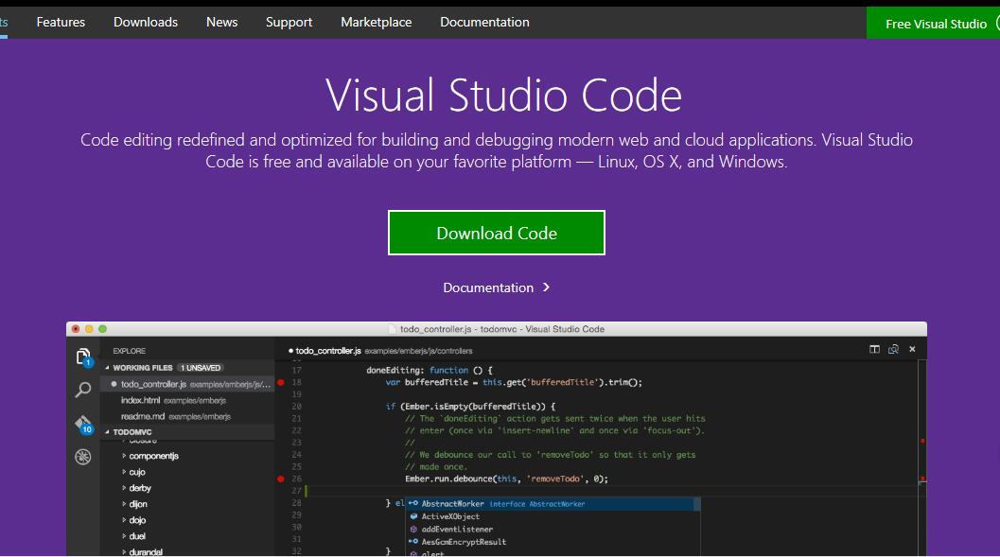</p>
<p>下载安装后，然后设置autosave（自动保存）</p>
<p>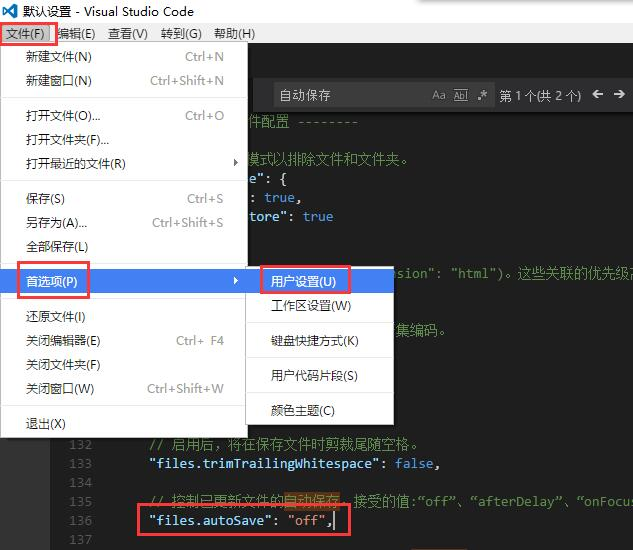</p>
<p>英文版VSC从<code>file</code>-&gt;<code>preference</code>-&gt;<code>user setting</code>里，用<code>Ctrl+F</code>找到的”files.autoSave”: “off”,</p>
<p>然后粘贴到右边，粘贴为”files.autoSave”: “afterDelay”，保存，延迟时间可以自己修改。</p>
<p>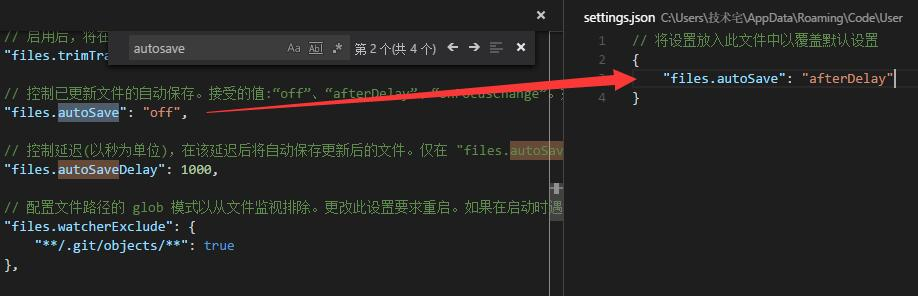</p>
<h2 id="安装PHP集成开发环境"><a href="#安装PHP集成开发环境" class="headerlink" title="安装PHP集成开发环境"></a>安装PHP集成开发环境</h2><p><a href="https://www.apachefriends.org/index.html" target="_blank" rel="noopener">XAMPP下载地址</a></p>
<p>我自己使用的XAMPP，装在了E盘根目录下。主要是因为C盘是一个128G的SSD，空间十分吃紧。</p>
<p>写这个记录的时候，版本是5.6.19。</p>
<p>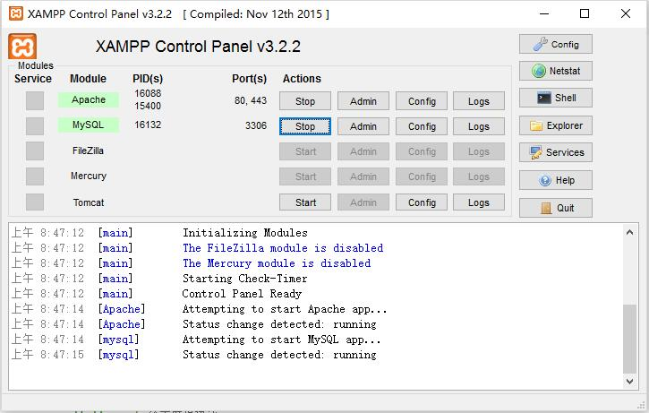</p>
<p>如果80端口被占用，就使用8080端口，关于XAMPP的调试和错误，我回来打算另开一个帖子记录一下，并且MAC下就不打算用XAMPP了，而是用vagrant+box的组合，装个centos和自己的云服务器配置一样，因为云服务器确实装一次挺折腾的。后话不说。</p>
<h2 id="为VS-Code安装php开发环境"><a href="#为VS-Code安装php开发环境" class="headerlink" title="为VS Code安装php开发环境"></a>为VS Code安装php开发环境</h2><p>打开VSC，按ctrl+shift+p（这个快捷键和sublime的一样），输入<code>ext install php</code>，</p>
<p>我这里装的是中文版，可以直接看到安装扩展的选项。</p>
<p>可以看到php先关的扩展有不少，大家可以按照自己的需求安装。</p>
<p>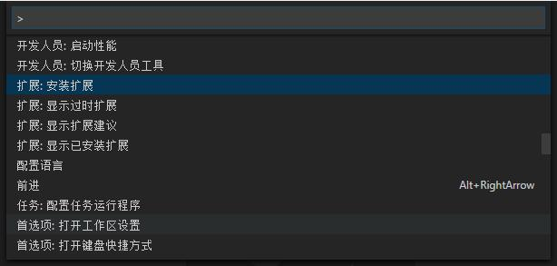</p>
<p>我主要装了debug和format。</p>
<p>然后vsc提示安装成功，重启vsc便可以启用相关扩展。</p>
<h2 id="添加php调试参数"><a href="#添加php调试参数" class="headerlink" title="添加php调试参数"></a>添加php调试参数</h2><p>重启了vsc，打开一个Php,会看到vsc的一个提示。</p>
<p>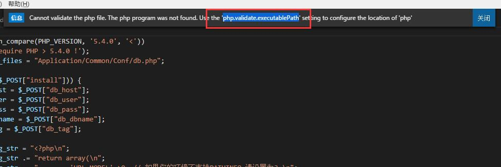</p>
<p>需要在用户设置里添加一个<code>php.validate.executablePath</code>，让php插件可以找到php.exe的路径。</p>
<p>按照上面找到<code>autosave</code>的方式，打开用户设置，在右侧添加一句</p>
<p><code>&quot;php.validate.executablePath&quot;: &quot;E:/xampp/php/php.exe&quot;</code></p>
<p>记住如果仅有一条配置，最后一个json，不需要逗号。</p>
<p>不解释，直接上图。</p>
<p>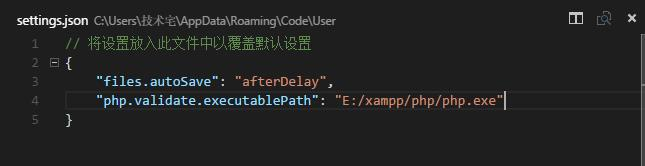</p>
<h2 id="下载xDebug"><a href="#下载xDebug" class="headerlink" title="下载xDebug"></a>下载xDebug</h2><p>从打开中，选择<code>打开文件夹</code>，然后切换到DEBUG模式，通过点击绿色小箭头，会弹出一个提示，让你设置xDebug的参数。<br>这是因为vsc使用的php debug插件用到了xDebug，xDebug的下载地址和说明，见下文章节。</p>
<h3 id="概念解释"><a href="#概念解释" class="headerlink" title="概念解释"></a>概念解释</h3><h4 id="什么是xDebug"><a href="#什么是xDebug" class="headerlink" title="什么是xDebug"></a>什么是xDebug</h4><blockquote>
<p>Xdebug是一个开放源代码的PHP程序调试器(即一个Debug工具)，可以用来跟踪，调试和分析PHP程序的运行状况。Xdebug现在的最新版本是Xdebug 2.4.0RC4,release日期 2016-01-25，添加了对PHP7的支持。</p>
</blockquote>
<p>所以，我们需要先花一点时间来下载和安装xDebug，<a href="https://xdebug.org/download.php" target="_blank" rel="noopener">下载地址</a>，有两个版本带有Non-thread-safe和不带有Non-thread-safe，主要是看你的php版本是否线程安全版本。Windows下需要下载非线程安全的32位版本。</p>
<p>上图说话。</p>
<p>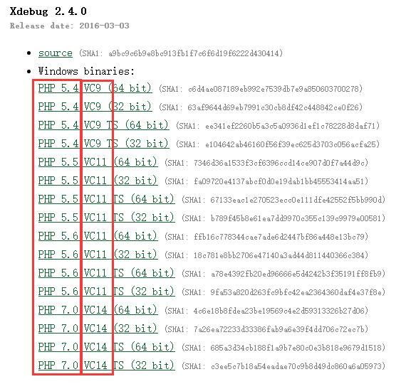</p>
<p>图片中第一个红框中，是按照你所安装的php.exe的版本选择，什么？你不记得你安装的php版本了？去你的集成开发环境包中看都集成的appache php和mysql分别是什么版本吧。什么？你也觉得费劲？那就来个更省事的，直接localhost/phpinfo.php来看吧，什么？你这个文件没了？那么，自己建立一个吧，什么？你不知道基本语法是什么？</p>
<p>我。。。</p>
<p>下面是一个最基本的phpinfo()。</p>
<figure class="highlight php"><table><tr><td class="gutter"><pre><span class="line">1</span><br><span class="line">2</span><br><span class="line">3</span><br><span class="line">4</span><br><span class="line">5</span><br><span class="line">6</span><br><span class="line">7</span><br><span class="line">8</span><br><span class="line">9</span><br><span class="line">10</span><br></pre></td><td class="code"><pre><span class="line"><span class="meta">&lt;?php</span></span><br><span class="line"></span><br><span class="line"><span class="comment">// 显示所有信息，默认显示 INFO_ALL</span></span><br><span class="line">phpinfo();</span><br><span class="line"></span><br><span class="line"><span class="comment">// Show just the module information. 仅仅显示PHP模块信息，</span></span><br><span class="line"><span class="comment">// phpinfo(8) 返回同样的结果。</span></span><br><span class="line">phpinfo(INFO_MODULES);</span><br><span class="line"></span><br><span class="line"><span class="meta">?&gt;</span></span><br></pre></td></tr></table></figure>

<p>这个文件的格式，可以参考PHP的官方说明，地址在<a href="http://php.net/manual/zh/function.phpinfo.php" target="_blank" rel="noopener">这里</a>。创建一个文件phpinfo.php然后把上面的内容写进去，然后放在你的localhost路径下，浏览器中打开<a href="http://localhost/phpinfo.php，就可以看到执行效果了。" target="_blank" rel="noopener">http://localhost/phpinfo.php，就可以看到执行效果了。</a></p>
<p>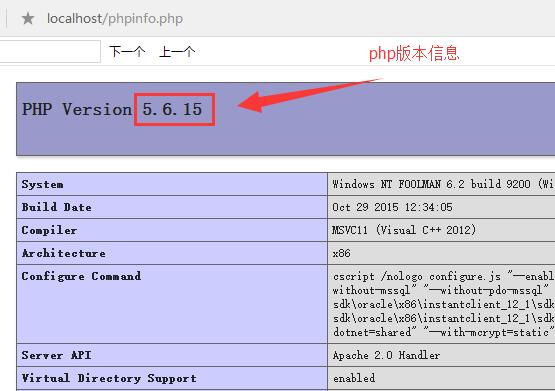</p>
<p>可以看到自己电脑上安装的php版本号是5.6。</p>
<blockquote>
<ul>
<li>PHP的大版本主要分支：PHP4/PHP5/PHP7(PHP6官方没有）</li>
</ul>
</blockquote>
<blockquote>
<p>其中，PHP4由于太古老、对OO支持不力已基本被淘汰，请无视PHP4。</p>
</blockquote>
<blockquote>
<p>PHP6/PHP7由于基本没有生产线上的应用，还基本只是一款概念产品，很多功能已在PHP5.3.3上实现，所以也不详述，请无视PHP6/7。</p>
</blockquote>
<blockquote>
<p>PHP5的版本主要分四支：PHP5.2之前的版本、PHP5.2.X、PHP5.3和日前发布的PHP5.4。</p>
</blockquote>
<blockquote>
<ul>
<li>那我们应该如何选择适用自己项目的版本呢？</li>
</ul>
</blockquote>
<blockquote>
<p>PHP5.2之前的版本不值得考虑，因为某些功能缺陷或者BUG，PHP5.2之前的版本。PHP5.4还处于Beta试用的版本号，非稳定版本，请无视PHP5.4。</p>
</blockquote>
<blockquote>
<p>主流PHP程序对PHP5.2.X的兼容性最好，而每次版本号的升级带来的都是安全性和稳定性的改善，所以宜挑选最新的版本。目前PHP5.2系列最新的是PHP5.2.17。</p>
</blockquote>
<blockquote>
<p>而如果产品是自己开发自己使用，PHP5.3在某些方面更具优势，在稳定性上更胜一筹，增加了很多PHP5.2所不具有的功能，比如内置php-fpm、更完善的垃圾回收算法、命名空间的引        入、sqlite3的支持等等，是部署项目值得考虑的版本，强烈推荐PHP5.3.29。（这是5.3 的最后一个版本)</p>
</blockquote>
<p>上面这段文件是转载别人博客上的，大家参考就好。</p>
<h4 id="如何选择VC9-VC11-VC14？"><a href="#如何选择VC9-VC11-VC14？" class="headerlink" title="如何选择VC9/VC11/VC14？"></a>如何选择VC9/VC11/VC14？</h4><p>php 7.0对应vc14，php 5.5 和 5.6 对应vc11，php 5.4对应vc9。</p>
<h4 id="TS是什么意思？"><a href="#TS是什么意思？" class="headerlink" title="TS是什么意思？"></a>TS是什么意思？</h4><p>TS指Thread Safety，即线程安全，一般在IIS以ISAPI方式加载的时候选择这个版本。</p>
<p>NTS即None-Thread Safe，一般以fast cgi方式运行的时候选择这个版本，具有更好的性能。</p>
<blockquote>
<p>从2000年10月20日发布的第一个Windows版的PHP3.0.17开始的都是线程安全的版本，这是由于与Linux/Unix系统是采用多进程的工作方式不同的是Windows系统是采用多线程的工作方式。如果在IIS下以CGI方式运行PHP会非常慢，这是由于CGI模式是建立在多进程的基础之上的，而非多线程。一般我们会把PHP配置成以ISAPI的方式来运行，ISAPI是多线程的方式，这样就快多了。但存在一个问题，很多常用的PHP扩展是以Linux/Unix的多进程思想来开发的，这些扩展在ISAPI的方式运行时就会出错搞垮IIS。因此在IIS下CGI模式才是 PHP运行的最安全方式，但CGI模式对于每个HTTP请求都需要重新加载和卸载整个PHP环境，其消耗是巨大的。</p>
</blockquote>
<blockquote>
<p>为了兼顾IIS下PHP的效率和安全，微软给出了FastCGI的解决方案。FastCGI可以让PHP的进程重复利用而不是每一个新的请求就重开一个进程。同时FastCGI也可以允许几个进程同时执行。这样既解决了CGI进程模式消耗太大的问题，又利用上了CGI进程模式不存在线程安全问题的优势。</p>
</blockquote>
<blockquote>
<p>因此，如果是使用ISAPI的方式来运行PHP就必须用Thread Safe(线程安全)的版本；而用FastCGI模式运行PHP的话就没有必要用线程安全检查了，用None Thread Safe(NTS，非线程安全)的版本能够更好的提高效率。</p>
</blockquote>
<p>上面看完了，按照你的PHP版本，下载对应的xDebug文件，下载之后，是一个dll文件，把这个文件，复制到你的php集成开发环境的目录的位置。</p>
<p>我使用的XMAPP，放在了E盘，所以，我把这个dll文件复制到了e:\xmapp\php\etc目录下，这个目录是Php的拓展目录。</p>
<h3 id="修改php-ini"><a href="#修改php-ini" class="headerlink" title="修改php.ini"></a>修改php.ini</h3><p>在e:\xmapp\php目录下，找到你的php.ini文件，在文件的末尾，添加如下代码：</p>
<figure class="highlight plain"><table><tr><td class="gutter"><pre><span class="line">1</span><br><span class="line">2</span><br><span class="line">3</span><br><span class="line">4</span><br></pre></td><td class="code"><pre><span class="line">[XDebug]</span><br><span class="line">zend_extension = E:\xampp\php\ext\php_xdebug-2.4.0-5.6-vc11.dll</span><br><span class="line">xdebug.remote_enable=1</span><br><span class="line">xdebug.remote_autostart=1</span><br></pre></td></tr></table></figure>

<p>这里，有几个需要注意的地方，先说<code>zend_extension</code>，如果你下载的是TS版本，这个参数需要改为<code>zend_extension_ts</code>。</p>
<p>并且，由于xDebug和Zend有冲突，所以请把zend的相关参数要注释掉。</p>
<p>典型就是如下几条：</p>
<figure class="highlight plain"><table><tr><td class="gutter"><pre><span class="line">1</span><br><span class="line">2</span><br><span class="line">3</span><br><span class="line">4</span><br><span class="line">5</span><br><span class="line">6</span><br></pre></td><td class="code"><pre><span class="line">[Zend]</span><br><span class="line">;zend_extension_ts = &quot;C:\Program Files\xampp\php\zendOptimizer\lib\ZendExtensionManager.dll&quot;</span><br><span class="line">;zend_extension_manager.optimizer_ts = &quot;C:\Program Files\xampplite\php\zendOptimizer\lib\Optimizer&quot;</span><br><span class="line">;zend_optimizer.enable_loader = 0</span><br><span class="line">;zend_optimizer.optimization_level=15</span><br><span class="line">;zend_optimizer.license_path =</span><br></pre></td></tr></table></figure>

<p>我使用的XMAPP 2015年11月12日的版本，发现上述修改在我这里是不需要的，直接添加xDebug的三行代码，保存PHP.INI，然后回到XMAPP的控制面板，把APACHE先STOP然后再START，就可以了。</p>
<p>如何测试呢？用浏览器打开<a href="http://localhost/phpinfo.php" target="_blank" rel="noopener">http://localhost/phpinfo.php</a></p>
<p>如果看到配置里面，有xDebug的项目，就说明配置成功了，最简单的就是直接CTRL+F搜索XDEBUG，没有就说明失败。</p>
<p>我在网上学习的过程中，找到了一篇非常有参考价值的博文，里面介绍了XDEBUG官方的一种”贴心”的配置php.ini的方式，博文原文地址在<a href="http://www.blogdaren.com/m/?post=2062" target="_blank" rel="noopener">这里</a>，我这里引用其中一段即可。</p>
<blockquote>
<p>再次浏览 Xdebug 官网，发现有一个贴心的服务，就是：提取用户的 phpinfo 信息，提交给 Xdebug 官网的一个程序，它立即分析 PHP 环境的信息，即刻给出下载 Xdebug 某个版本的建议。立等可取，有点意思！</p>
</blockquote>
<blockquote>
<p>于是提交我的 phpinfo 信息，从 <a href="http://www.xdebug.org/find-binary.php" target="_blank" rel="noopener">http://www.xdebug.org/find-binary.php</a> 页面提交，得到提示信息：</p>
</blockquote>
<p>下面用我自己返回的配置复制黏贴到上文中的<a href="http://www.xdebug.org/find-binary.php" target="_blank" rel="noopener">官方地址</a>。</p>
<p>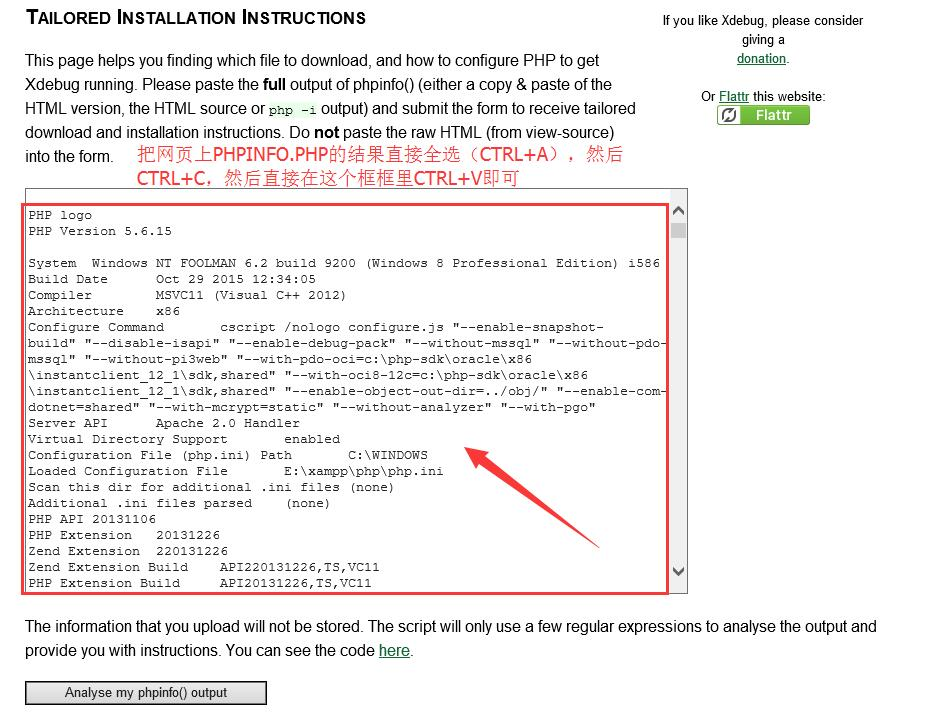</p>
<p>然后就看到了官方给出的建议：</p>
<p>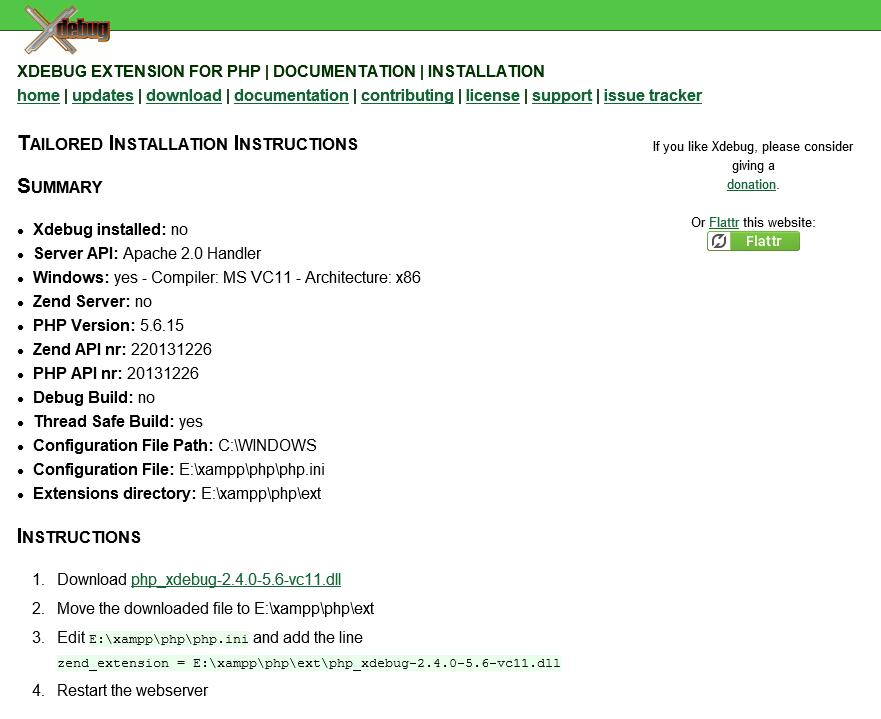</p>
<p>按照这个指导，圆满的完成了我的xDebug配置，真是非常贴心！这个办法，对于开发者也非常给力。</p>
<p>下面继续回到VSCode。</p>
<h3 id="修改VSC-DEBUG设置"><a href="#修改VSC-DEBUG设置" class="headerlink" title="修改VSC DEBUG设置"></a>修改VSC DEBUG设置</h3><p>直接上图</p>
<p>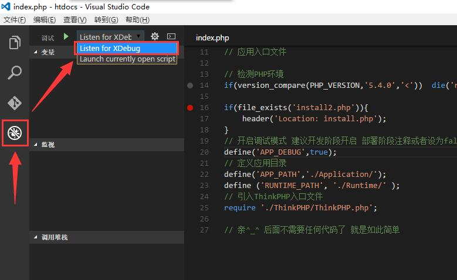</p>
<ol>
<li>点左侧的DEBUG按钮（虫子那个）</li>
<li>在绿色箭头右侧，选择LISTEN FOR XDEBUG</li>
<li>在右侧你的PHP的代码上，随便某一行打上个断点</li>
<li>点F5，会看到VSC编辑器上方，出现了熟悉的”继续”、”单步跳过”等微软风格的调试按钮。</li>
<li>然后，请到你的浏览器里面，输入<a href="http://localhost，或者http://127.0.0.1进行调试你在VSC中打了断点的php程序。" target="_blank" rel="noopener">http://localhost，或者http://127.0.0.1进行调试你在VSC中打了断点的php程序。</a></li>
<li>你会发现，浏览器直接切换回到VSC，并且停留在了你的断点位置。</li>
<li>GAME OVER~</li>
</ol>
<p>再上个图</p>
<p>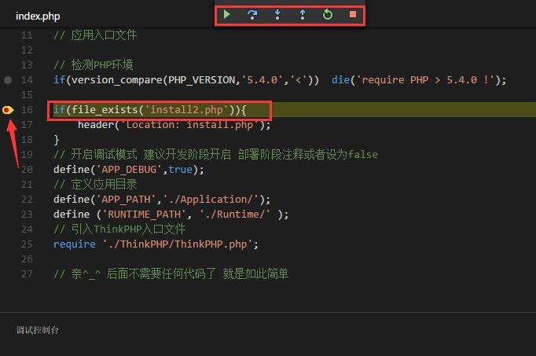</p>
<p>好了，终于搞完了WINDOWS下的PHP环境搭建，有啥问题或者博客中的问题，麻烦小伙伴直接恢复吧，有问必回，下班~</p>
<h2 id="参考资料"><a href="#参考资料" class="headerlink" title="参考资料"></a>参考资料</h2><ol>
<li><a href="http://www.bubuko.com/infodetail-1331103.html" target="_blank" rel="noopener">PHP与VC对应关系、TS和NTS的区别</a></li>
<li><a href="http://baike.baidu.com/view/1823486.htm" target="_blank" rel="noopener">xDebug百度百科词条</a></li>
<li><a href="https://netbeans.org/kb/docs/php/configure-php-environment-windows_zh_CN.html" target="_blank" rel="noopener">NETBEANS官方出的XMAPP配置XDEBUG说明</a></li>
<li><a href="http://www.blogdaren.com/m/?post=2062" target="_blank" rel="noopener">这里提供了XDEBUG官方一种贴心的配置方法</a></li>
</ol>

        </div>
        <footer class="article-footer">
            


    <a data-url="http://www.wuliaole.com/post/20160415-在Windows下进行PHP开发/" data-id="cjywo0x5f00g2hgokbjzvdvte" class="article-share-link"><i class="fa fa-share"></i>分享到</a>
<script>
    (function ($) {
        $('body').on('click', function() {
            $('.article-share-box.on').removeClass('on');
        }).on('click', '.article-share-link', function(e) {
            e.stopPropagation();

            var $this = $(this),
                url = $this.attr('data-url'),
                encodedUrl = encodeURIComponent(url),
                id = 'article-share-box-' + $this.attr('data-id'),
                offset = $this.offset(),
                box;

            if ($('#' + id).length) {
                box = $('#' + id);

                if (box.hasClass('on')){
                    box.removeClass('on');
                    return;
                }
            } else {
                var html = [
                    '<div id="' + id + '" class="article-share-box">',
                        '<input class="article-share-input" value="' + url + '">',
                        '<div class="article-share-links">',
                            '<a href="https://twitter.com/intent/tweet?url=' + encodedUrl + '" class="article-share-twitter" target="_blank" title="Twitter"></a>',
                            '<a href="https://www.facebook.com/sharer.php?u=' + encodedUrl + '" class="article-share-facebook" target="_blank" title="Facebook"></a>',
                            '<a href="http://pinterest.com/pin/create/button/?url=' + encodedUrl + '" class="article-share-pinterest" target="_blank" title="Pinterest"></a>',
                            '<a href="https://plus.google.com/share?url=' + encodedUrl + '" class="article-share-google" target="_blank" title="Google+"></a>',
                        '</div>',
                    '</div>'
                ].join('');

              box = $(html);

              $('body').append(box);
            }

            $('.article-share-box.on').hide();

            box.css({
                top: offset.top + 25,
                left: offset.left
            }).addClass('on');

        }).on('click', '.article-share-box', function (e) {
            e.stopPropagation();
        }).on('click', '.article-share-box-input', function () {
            $(this).select();
        }).on('click', '.article-share-box-link', function (e) {
            e.preventDefault();
            e.stopPropagation();

            window.open(this.href, 'article-share-box-window-' + Date.now(), 'width=500,height=450');
        });
    })(jQuery);
</script>

        </footer>
    </div>
    <script type="application/ld+json">
    {
        "@context": "https://schema.org",
        "@type": "BlogPosting",
        "author": {
            "@type": "Person",
            "name": "节约用爱"
        },
        "headline": "在Windows下进行PHP开发",
        "image": "http://www.wuliaole.comvscdownload.jpg",
        "keywords": "vscode php 开发",
        "genre": "折腾",
        "datePublished": "2016-04-15",
        "dateCreated": "2016-04-15",
        "dateModified": "2018-10-11",
        "url": "http://www.wuliaole.com/post/20160415-在Windows下进行PHP开发/",
        "description": "文章更新
20160415-初次成文
20160923-增加了XAMPP的配置内容

为什么会有这篇文章之前零零散散的写过2-3篇文字，终于整合到了一起
XAMPP配置注意关闭WINDOWS自带的IIS服务，这个需要打开控制面板（WIN+X，选择控制面板），依次选择程序-开启或关闭WINDOWS功能，然后把INTERNET INFORMATION SERVICE服务前面的勾勾掉，然后再启动APAC"
        "wordCount": 444
    }
</script>

</article>

    <section id="comments">
    
        
    <div id="disqus_thread">
        <noscript>Please enable JavaScript to view the <a href="//disqus.com/?ref_noscript">comments powered by Disqus.</a></noscript>
    </div>

    
    </section>


                        </div>
                    </section>
                    <aside id="sidebar">
    <a class="sidebar-toggle" title="Expand Sidebar"><i class="toggle icon"></i></a>
    <div class="sidebar-top">
        <p>关注我 :</p>
        <ul class="social-links">
            
                
                <li>
                    <a class="social-tooltip" title="twitter" href="/" target="_blank" rel="noopener">
                        <i class="icon fa fa-twitter"></i>
                    </a>
                </li>
                
            
                
                <li>
                    <a class="social-tooltip" title="facebook" href="/" target="_blank" rel="noopener">
                        <i class="icon fa fa-facebook"></i>
                    </a>
                </li>
                
            
                
                <li>
                    <a class="social-tooltip" title="google-plus" href="/" target="_blank" rel="noopener">
                        <i class="icon fa fa-google-plus"></i>
                    </a>
                </li>
                
            
                
                <li>
                    <a class="social-tooltip" title="github" href="https://github.com/tinyvane" target="_blank" rel="noopener">
                        <i class="icon fa fa-github"></i>
                    </a>
                </li>
                
            
                
                <li>
                    <a class="social-tooltip" title="weibo" href="/" target="_blank" rel="noopener">
                        <i class="icon fa fa-weibo"></i>
                    </a>
                </li>
                
            
                
                <li>
                    <a class="social-tooltip" title="rss" href="/" target="_blank" rel="noopener">
                        <i class="icon fa fa-rss"></i>
                    </a>
                </li>
                
            
        </ul>
    </div>
    
        
<nav id="article-nav">
    
        <a href="/post/20160427-安装CENTOS7遇到启动问题/" id="article-nav-newer" class="article-nav-link-wrap">
        <strong class="article-nav-caption">下一篇</strong>
        <p class="article-nav-title">
        
            安装CENTOS7遇到启动问题
        
        </p>
        <i class="icon fa fa-chevron-right" id="icon-chevron-right"></i>
    </a>
    
    
        <a href="/post/20160412-日本购买的mac电脑改键成习惯的英文键位/" id="article-nav-older" class="article-nav-link-wrap">
        <strong class="article-nav-caption">上一篇</strong>
        <p class="article-nav-title">日本购买的mac电脑改键成习惯的英文键位</p>
        <i class="icon fa fa-chevron-left" id="icon-chevron-left"></i>
        </a>
    
</nav>

    
    <div class="widgets-container">
        
            
                

            
                
    <div class="widget-wrap">
        <h3 class="widget-title">最新文章</h3>
        <div class="widget">
            <ul id="recent-post" class="">
                
                    <li>
                        
                        <div class="item-thumbnail">
                            <a href="/post/20190804-HEXO插入图片的BT脑回路/" class="thumbnail">
    
    
        <span style="background-image:url(/.com//123.jpg)" alt="HEXO插入图片的BT脑回路" class="thumbnail-image"></span>
    
    
</a>

                        </div>
                        
                        <div class="item-inner">
                            <p class="item-category"><a class="article-category-link" href="/categories/折腾/">折腾</a></p>
                            <p class="item-title"><a href="/post/20190804-HEXO插入图片的BT脑回路/" class="title">HEXO插入图片的BT脑回路</a></p>
                            <p class="item-date"><time datetime="2019-08-04T06:25:01.000Z" itemprop="datePublished">2019-08-04</time></p>
                        </div>
                    </li>
                
                    <li>
                        
                        <div class="item-thumbnail">
                            <a href="/post/20190803-WORD中的VBA操作/" class="thumbnail">
    
    
        <span class="thumbnail-image thumbnail-none"></span>
    
    
</a>

                        </div>
                        
                        <div class="item-inner">
                            <p class="item-category"><a class="article-category-link" href="/categories/折腾/">折腾</a></p>
                            <p class="item-title"><a href="/post/20190803-WORD中的VBA操作/" class="title">WORD中的VBA操作</a></p>
                            <p class="item-date"><time datetime="2019-08-03T06:55:17.000Z" itemprop="datePublished">2019-08-03</time></p>
                        </div>
                    </li>
                
                    <li>
                        
                        <div class="item-thumbnail">
                            <a href="/post/20190719-微软即点即用和msi共存的软件安装方法/" class="thumbnail">
    
    
        <span style="background-image:url(%E5%BE%AE%E4%BF%A1%E6%88%AA%E5%9B%BE_20190804064606.png)" alt="微软即点即用和msi共存的安装方法" class="thumbnail-image"></span>
    
    
</a>

                        </div>
                        
                        <div class="item-inner">
                            <p class="item-category"><a class="article-category-link" href="/categories/折腾/">折腾</a></p>
                            <p class="item-title"><a href="/post/20190719-微软即点即用和msi共存的软件安装方法/" class="title">微软即点即用和msi共存的安装方法</a></p>
                            <p class="item-date"><time datetime="2019-07-19T09:13:03.000Z" itemprop="datePublished">2019-07-19</time></p>
                        </div>
                    </li>
                
                    <li>
                        
                        <div class="item-thumbnail">
                            <a href="/post/20190719-shadowsocks支持windows邮件、OFFICE登陆翻墙/" class="thumbnail">
    
    
        <span class="thumbnail-image thumbnail-none"></span>
    
    
</a>

                        </div>
                        
                        <div class="item-inner">
                            <p class="item-category"><a class="article-category-link" href="/categories/折腾/">折腾</a></p>
                            <p class="item-title"><a href="/post/20190719-shadowsocks支持windows邮件、OFFICE登陆翻墙/" class="title">20190719-shadowsocks支持windows邮件、OFFICE登陆翻墙</a></p>
                            <p class="item-date"><time datetime="2019-07-19T05:11:23.000Z" itemprop="datePublished">2019-07-19</time></p>
                        </div>
                    </li>
                
                    <li>
                        
                        <div class="item-thumbnail">
                            <a href="/post/20190719-常用GIT命令和使用场景/" class="thumbnail">
    
    
        <span class="thumbnail-image thumbnail-none"></span>
    
    
</a>

                        </div>
                        
                        <div class="item-inner">
                            <p class="item-category"><a class="article-category-link" href="/categories/折腾/">折腾</a></p>
                            <p class="item-title"><a href="/post/20190719-常用GIT命令和使用场景/" class="title">201907199-常用GIT命令和使用场景</a></p>
                            <p class="item-date"><time datetime="2019-07-19T04:23:57.000Z" itemprop="datePublished">2019-07-19</time></p>
                        </div>
                    </li>
                
            </ul>
        </div>
    </div>

            
                
    <div class="widget-wrap widget-list">
        <h3 class="widget-title">分类</h3>
        <div class="widget">
            <ul class="category-list"><li class="category-list-item"><a class="category-list-link" href="/categories/CentOS/">CentOS</a><span class="category-list-count">4</span></li><li class="category-list-item"><a class="category-list-link" href="/categories/Hexo/">Hexo</a><span class="category-list-count">11</span><ul class="category-list-child"><li class="category-list-item"><a class="category-list-link" href="/categories/Hexo/基础/">基础</a><span class="category-list-count">2</span></li></ul></li><li class="category-list-item"><a class="category-list-link" href="/categories/Linux/">Linux</a><span class="category-list-count">6</span></li><li class="category-list-item"><a class="category-list-link" href="/categories/MacOS/">MacOS</a><span class="category-list-count">3</span></li><li class="category-list-item"><a class="category-list-link" href="/categories/折腾/">折腾</a><span class="category-list-count">64</span></li><li class="category-list-item"><a class="category-list-link" href="/categories/效率/">效率</a><span class="category-list-count">7</span></li><li class="category-list-item"><a class="category-list-link" href="/categories/日常使用/">日常使用</a><span class="category-list-count">1</span></li><li class="category-list-item"><a class="category-list-link" href="/categories/raspberry/">树莓派</a><span class="category-list-count">11</span><ul class="category-list-child"><li class="category-list-item"><a class="category-list-link" href="/categories/raspberry/入门/">入门</a><span class="category-list-count">2</span></li></ul></li><li class="category-list-item"><a class="category-list-link" href="/categories/编程/">编程</a><span class="category-list-count">8</span></li></ul>
        </div>
    </div>


            
                
    <div class="widget-wrap widget-list">
        <h3 class="widget-title">归档</h3>
        <div class="widget">
            <ul class="archive-list"><li class="archive-list-item"><a class="archive-list-link" href="/archives/2019/08/">八月 2019</a><span class="archive-list-count">2</span></li><li class="archive-list-item"><a class="archive-list-link" href="/archives/2019/07/">七月 2019</a><span class="archive-list-count">3</span></li><li class="archive-list-item"><a class="archive-list-link" href="/archives/2018/10/">十月 2018</a><span class="archive-list-count">3</span></li><li class="archive-list-item"><a class="archive-list-link" href="/archives/2018/09/">九月 2018</a><span class="archive-list-count">4</span></li><li class="archive-list-item"><a class="archive-list-link" href="/archives/2018/05/">五月 2018</a><span class="archive-list-count">1</span></li><li class="archive-list-item"><a class="archive-list-link" href="/archives/2018/02/">二月 2018</a><span class="archive-list-count">2</span></li><li class="archive-list-item"><a class="archive-list-link" href="/archives/2017/08/">八月 2017</a><span class="archive-list-count">4</span></li><li class="archive-list-item"><a class="archive-list-link" href="/archives/2017/05/">五月 2017</a><span class="archive-list-count">4</span></li><li class="archive-list-item"><a class="archive-list-link" href="/archives/2017/04/">四月 2017</a><span class="archive-list-count">2</span></li><li class="archive-list-item"><a class="archive-list-link" href="/archives/2017/03/">三月 2017</a><span class="archive-list-count">10</span></li><li class="archive-list-item"><a class="archive-list-link" href="/archives/2017/02/">二月 2017</a><span class="archive-list-count">3</span></li><li class="archive-list-item"><a class="archive-list-link" href="/archives/2016/10/">十月 2016</a><span class="archive-list-count">1</span></li><li class="archive-list-item"><a class="archive-list-link" href="/archives/2016/09/">九月 2016</a><span class="archive-list-count">9</span></li><li class="archive-list-item"><a class="archive-list-link" href="/archives/2016/08/">八月 2016</a><span class="archive-list-count">10</span></li><li class="archive-list-item"><a class="archive-list-link" href="/archives/2016/07/">七月 2016</a><span class="archive-list-count">16</span></li><li class="archive-list-item"><a class="archive-list-link" href="/archives/2016/06/">六月 2016</a><span class="archive-list-count">9</span></li><li class="archive-list-item"><a class="archive-list-link" href="/archives/2016/05/">五月 2016</a><span class="archive-list-count">6</span></li><li class="archive-list-item"><a class="archive-list-link" href="/archives/2016/04/">四月 2016</a><span class="archive-list-count">10</span></li><li class="archive-list-item"><a class="archive-list-link" href="/archives/2016/03/">三月 2016</a><span class="archive-list-count">5</span></li><li class="archive-list-item"><a class="archive-list-link" href="/archives/2016/01/">一月 2016</a><span class="archive-list-count">2</span></li><li class="archive-list-item"><a class="archive-list-link" href="/archives/2015/12/">十二月 2015</a><span class="archive-list-count">13</span></li></ul>
        </div>
    </div>


            
                
    <div class="widget-wrap widget-list">
        <h3 class="widget-title">标签</h3>
        <div class="widget">
            <ul class="tag-list"><li class="tag-list-item"><a class="tag-list-link" href="/tags/net/">.net</a><span class="tag-list-count">3</span></li><li class="tag-list-item"><a class="tag-list-link" href="/tags/net-core/">.net core</a><span class="tag-list-count">1</span></li><li class="tag-list-item"><a class="tag-list-link" href="/tags/100m宽带/">100m宽带</a><span class="tag-list-count">1</span></li><li class="tag-list-item"><a class="tag-list-link" href="/tags/3D建模/">3D建模</a><span class="tag-list-count">1</span></li><li class="tag-list-item"><a class="tag-list-link" href="/tags/404/">404</a><span class="tag-list-count">1</span></li><li class="tag-list-item"><a class="tag-list-link" href="/tags/C/">C#</a><span class="tag-list-count">1</span></li><li class="tag-list-item"><a class="tag-list-link" href="/tags/FTP/">FTP</a><span class="tag-list-count">1</span></li><li class="tag-list-item"><a class="tag-list-link" href="/tags/GPT/">GPT</a><span class="tag-list-count">1</span></li><li class="tag-list-item"><a class="tag-list-link" href="/tags/Hexo/">Hexo</a><span class="tag-list-count">1</span></li><li class="tag-list-item"><a class="tag-list-link" href="/tags/IMG/">IMG</a><span class="tag-list-count">1</span></li><li class="tag-list-item"><a class="tag-list-link" href="/tags/Linux/">Linux</a><span class="tag-list-count">1</span></li><li class="tag-list-item"><a class="tag-list-link" href="/tags/M3-bitlocker-loader/">M3 bitlocker loader</a><span class="tag-list-count">1</span></li><li class="tag-list-item"><a class="tag-list-link" href="/tags/MAC/">MAC</a><span class="tag-list-count">2</span></li><li class="tag-list-item"><a class="tag-list-link" href="/tags/MBR/">MBR</a><span class="tag-list-count">1</span></li><li class="tag-list-item"><a class="tag-list-link" href="/tags/MarkDown/">MarkDown</a><span class="tag-list-count">1</span></li><li class="tag-list-item"><a class="tag-list-link" href="/tags/OSX/">OSX</a><span class="tag-list-count">1</span></li><li class="tag-list-item"><a class="tag-list-link" href="/tags/PC/">PC</a><span class="tag-list-count">1</span></li><li class="tag-list-item"><a class="tag-list-link" href="/tags/PHP/">PHP</a><span class="tag-list-count">1</span></li><li class="tag-list-item"><a class="tag-list-link" href="/tags/RASPBERRY/">RASPBERRY</a><span class="tag-list-count">1</span></li><li class="tag-list-item"><a class="tag-list-link" href="/tags/Raspberry/">Raspberry</a><span class="tag-list-count">1</span></li><li class="tag-list-item"><a class="tag-list-link" href="/tags/Resilio-Sync/">Resilio Sync</a><span class="tag-list-count">1</span></li><li class="tag-list-item"><a class="tag-list-link" href="/tags/Sublime-Text-3/">Sublime Text 3</a><span class="tag-list-count">1</span></li><li class="tag-list-item"><a class="tag-list-link" href="/tags/VSCode/">VSCode</a><span class="tag-list-count">1</span></li><li class="tag-list-item"><a class="tag-list-link" href="/tags/Vim/">Vim</a><span class="tag-list-count">1</span></li><li class="tag-list-item"><a class="tag-list-link" href="/tags/Vimium/">Vimium</a><span class="tag-list-count">1</span></li><li class="tag-list-item"><a class="tag-list-link" href="/tags/Visual-Studio/">Visual Studio</a><span class="tag-list-count">1</span></li><li class="tag-list-item"><a class="tag-list-link" href="/tags/WD/">WD</a><span class="tag-list-count">1</span></li><li class="tag-list-item"><a class="tag-list-link" href="/tags/Winform/">Winform</a><span class="tag-list-count">1</span></li><li class="tag-list-item"><a class="tag-list-link" href="/tags/WordPress/">WordPress</a><span class="tag-list-count">1</span></li><li class="tag-list-item"><a class="tag-list-link" href="/tags/Xamarin/">Xamarin</a><span class="tag-list-count">1</span></li><li class="tag-list-item"><a class="tag-list-link" href="/tags/aliyun/">aliyun</a><span class="tag-list-count">1</span></li><li class="tag-list-item"><a class="tag-list-link" href="/tags/apache/">apache</a><span class="tag-list-count">1</span></li><li class="tag-list-item"><a class="tag-list-link" href="/tags/apple/">apple</a><span class="tag-list-count">1</span></li><li class="tag-list-item"><a class="tag-list-link" href="/tags/autocad/">autocad</a><span class="tag-list-count">1</span></li><li class="tag-list-item"><a class="tag-list-link" href="/tags/bash/">bash</a><span class="tag-list-count">1</span></li><li class="tag-list-item"><a class="tag-list-link" href="/tags/bitlocker/">bitlocker</a><span class="tag-list-count">1</span></li><li class="tag-list-item"><a class="tag-list-link" href="/tags/bonjor/">bonjor</a><span class="tag-list-count">1</span></li><li class="tag-list-item"><a class="tag-list-link" href="/tags/bower/">bower</a><span class="tag-list-count">1</span></li><li class="tag-list-item"><a class="tag-list-link" href="/tags/brew/">brew</a><span class="tag-list-count">2</span></li><li class="tag-list-item"><a class="tag-list-link" href="/tags/bt-sync/">bt sync</a><span class="tag-list-count">2</span></li><li class="tag-list-item"><a class="tag-list-link" href="/tags/btsync/">btsync</a><span class="tag-list-count">1</span></li><li class="tag-list-item"><a class="tag-list-link" href="/tags/c/">c#</a><span class="tag-list-count">6</span></li><li class="tag-list-item"><a class="tag-list-link" href="/tags/centos/">centos</a><span class="tag-list-count">10</span></li><li class="tag-list-item"><a class="tag-list-link" href="/tags/centos7/">centos7</a><span class="tag-list-count">1</span></li><li class="tag-list-item"><a class="tag-list-link" href="/tags/chrome/">chrome</a><span class="tag-list-count">1</span></li><li class="tag-list-item"><a class="tag-list-link" href="/tags/coding-net/">coding.net</a><span class="tag-list-count">1</span></li><li class="tag-list-item"><a class="tag-list-link" href="/tags/cow/">cow</a><span class="tag-list-count">1</span></li><li class="tag-list-item"><a class="tag-list-link" href="/tags/cp/">cp</a><span class="tag-list-count">1</span></li><li class="tag-list-item"><a class="tag-list-link" href="/tags/cron/">cron</a><span class="tag-list-count">1</span></li><li class="tag-list-item"><a class="tag-list-link" href="/tags/crontab/">crontab</a><span class="tag-list-count">1</span></li><li class="tag-list-item"><a class="tag-list-link" href="/tags/csharp/">csharp</a><span class="tag-list-count">2</span></li><li class="tag-list-item"><a class="tag-list-link" href="/tags/cygwin/">cygwin</a><span class="tag-list-count">1</span></li><li class="tag-list-item"><a class="tag-list-link" href="/tags/deploy/">deploy</a><span class="tag-list-count">1</span></li><li class="tag-list-item"><a class="tag-list-link" href="/tags/dotnetcore/">dotnetcore</a><span class="tag-list-count">1</span></li><li class="tag-list-item"><a class="tag-list-link" href="/tags/dropbear/">dropbear</a><span class="tag-list-count">1</span></li><li class="tag-list-item"><a class="tag-list-link" href="/tags/edge/">edge</a><span class="tag-list-count">1</span></li><li class="tag-list-item"><a class="tag-list-link" href="/tags/electon/">electon</a><span class="tag-list-count">1</span></li><li class="tag-list-item"><a class="tag-list-link" href="/tags/emergency-mode/">emergency mode</a><span class="tag-list-count">1</span></li><li class="tag-list-item"><a class="tag-list-link" href="/tags/ext4/">ext4</a><span class="tag-list-count">1</span></li><li class="tag-list-item"><a class="tag-list-link" href="/tags/firewall/">firewall</a><span class="tag-list-count">1</span></li><li class="tag-list-item"><a class="tag-list-link" href="/tags/formula/">formula</a><span class="tag-list-count">1</span></li><li class="tag-list-item"><a class="tag-list-link" href="/tags/ghost/">ghost</a><span class="tag-list-count">1</span></li><li class="tag-list-item"><a class="tag-list-link" href="/tags/git/">git</a><span class="tag-list-count">9</span></li><li class="tag-list-item"><a class="tag-list-link" href="/tags/github/">github</a><span class="tag-list-count">4</span></li><li class="tag-list-item"><a class="tag-list-link" href="/tags/gz/">gz</a><span class="tag-list-count">1</span></li><li class="tag-list-item"><a class="tag-list-link" href="/tags/hexo/">hexo</a><span class="tag-list-count">11</span></li><li class="tag-list-item"><a class="tag-list-link" href="/tags/hfs/">hfs</a><span class="tag-list-count">1</span></li><li class="tag-list-item"><a class="tag-list-link" href="/tags/hfs-for-Windows/">hfs for Windows</a><span class="tag-list-count">1</span></li><li class="tag-list-item"><a class="tag-list-link" href="/tags/homebrew/">homebrew</a><span class="tag-list-count">4</span></li><li class="tag-list-item"><a class="tag-list-link" href="/tags/hook/">hook</a><span class="tag-list-count">1</span></li><li class="tag-list-item"><a class="tag-list-link" href="/tags/ie/">ie</a><span class="tag-list-count">1</span></li><li class="tag-list-item"><a class="tag-list-link" href="/tags/karabiner/">karabiner</a><span class="tag-list-count">1</span></li><li class="tag-list-item"><a class="tag-list-link" href="/tags/launchagents/">launchagents</a><span class="tag-list-count">2</span></li><li class="tag-list-item"><a class="tag-list-link" href="/tags/launchdaemon/">launchdaemon</a><span class="tag-list-count">1</span></li><li class="tag-list-item"><a class="tag-list-link" href="/tags/linux/">linux</a><span class="tag-list-count">10</span></li><li class="tag-list-item"><a class="tag-list-link" href="/tags/ln/">ln</a><span class="tag-list-count">1</span></li><li class="tag-list-item"><a class="tag-list-link" href="/tags/mac/">mac</a><span class="tag-list-count">15</span></li><li class="tag-list-item"><a class="tag-list-link" href="/tags/macOS/">macOS</a><span class="tag-list-count">1</span></li><li class="tag-list-item"><a class="tag-list-link" href="/tags/mklink/">mklink</a><span class="tag-list-count">1</span></li><li class="tag-list-item"><a class="tag-list-link" href="/tags/mouse/">mouse</a><span class="tag-list-count">1</span></li><li class="tag-list-item"><a class="tag-list-link" href="/tags/msi/">msi</a><span class="tag-list-count">1</span></li><li class="tag-list-item"><a class="tag-list-link" href="/tags/mv/">mv</a><span class="tag-list-count">1</span></li><li class="tag-list-item"><a class="tag-list-link" href="/tags/mysql/">mysql</a><span class="tag-list-count">3</span></li><li class="tag-list-item"><a class="tag-list-link" href="/tags/nginx/">nginx</a><span class="tag-list-count">2</span></li><li class="tag-list-item"><a class="tag-list-link" href="/tags/ngrok/">ngrok</a><span class="tag-list-count">1</span></li><li class="tag-list-item"><a class="tag-list-link" href="/tags/node-js/">node.js</a><span class="tag-list-count">3</span></li><li class="tag-list-item"><a class="tag-list-link" href="/tags/npm/">npm</a><span class="tag-list-count">3</span></li><li class="tag-list-item"><a class="tag-list-link" href="/tags/office/">office</a><span class="tag-list-count">1</span></li><li class="tag-list-item"><a class="tag-list-link" href="/tags/oh-my-zsh/">oh-my-zsh</a><span class="tag-list-count">1</span></li><li class="tag-list-item"><a class="tag-list-link" href="/tags/openvpn/">openvpn</a><span class="tag-list-count">1</span></li><li class="tag-list-item"><a class="tag-list-link" href="/tags/openwrt/">openwrt</a><span class="tag-list-count">1</span></li><li class="tag-list-item"><a class="tag-list-link" href="/tags/opernwrt/">opernwrt</a><span class="tag-list-count">1</span></li><li class="tag-list-item"><a class="tag-list-link" href="/tags/osx/">osx</a><span class="tag-list-count">4</span></li><li class="tag-list-item"><a class="tag-list-link" href="/tags/pc/">pc</a><span class="tag-list-count">3</span></li><li class="tag-list-item"><a class="tag-list-link" href="/tags/php/">php</a><span class="tag-list-count">7</span></li><li class="tag-list-item"><a class="tag-list-link" href="/tags/php-fpm/">php-fpm</a><span class="tag-list-count">2</span></li><li class="tag-list-item"><a class="tag-list-link" href="/tags/progon/">progon</a><span class="tag-list-count">1</span></li><li class="tag-list-item"><a class="tag-list-link" href="/tags/rapsberry/">rapsberry</a><span class="tag-list-count">1</span></li><li class="tag-list-item"><a class="tag-list-link" href="/tags/raspberry/">raspberry</a><span class="tag-list-count">5</span></li><li class="tag-list-item"><a class="tag-list-link" href="/tags/raspberry-pi/">raspberry pi</a><span class="tag-list-count">4</span></li><li class="tag-list-item"><a class="tag-list-link" href="/tags/raspbian/">raspbian</a><span class="tag-list-count">1</span></li><li class="tag-list-item"><a class="tag-list-link" href="/tags/redhat/">redhat</a><span class="tag-list-count">1</span></li><li class="tag-list-item"><a class="tag-list-link" href="/tags/repo/">repo</a><span class="tag-list-count">1</span></li><li class="tag-list-item"><a class="tag-list-link" href="/tags/resilio-sync/">resilio sync</a><span class="tag-list-count">1</span></li><li class="tag-list-item"><a class="tag-list-link" href="/tags/resiliosync/">resiliosync</a><span class="tag-list-count">1</span></li><li class="tag-list-item"><a class="tag-list-link" href="/tags/responsity/">responsity</a><span class="tag-list-count">1</span></li><li class="tag-list-item"><a class="tag-list-link" href="/tags/rhel/">rhel</a><span class="tag-list-count">2</span></li><li class="tag-list-item"><a class="tag-list-link" href="/tags/rm/">rm</a><span class="tag-list-count">1</span></li><li class="tag-list-item"><a class="tag-list-link" href="/tags/rpm/">rpm</a><span class="tag-list-count">1</span></li><li class="tag-list-item"><a class="tag-list-link" href="/tags/rsa/">rsa</a><span class="tag-list-count">1</span></li><li class="tag-list-item"><a class="tag-list-link" href="/tags/runtime/">runtime</a><span class="tag-list-count">1</span></li><li class="tag-list-item"><a class="tag-list-link" href="/tags/screen/">screen</a><span class="tag-list-count">1</span></li><li class="tag-list-item"><a class="tag-list-link" href="/tags/sdk/">sdk</a><span class="tag-list-count">1</span></li><li class="tag-list-item"><a class="tag-list-link" href="/tags/shadowsocks/">shadowsocks</a><span class="tag-list-count">5</span></li><li class="tag-list-item"><a class="tag-list-link" href="/tags/shell/">shell</a><span class="tag-list-count">2</span></li><li class="tag-list-item"><a class="tag-list-link" href="/tags/shortcuts/">shortcuts</a><span class="tag-list-count">1</span></li><li class="tag-list-item"><a class="tag-list-link" href="/tags/sketchup/">sketchup</a><span class="tag-list-count">1</span></li><li class="tag-list-item"><a class="tag-list-link" href="/tags/socks5/">socks5</a><span class="tag-list-count">1</span></li><li class="tag-list-item"><a class="tag-list-link" href="/tags/ssh/">ssh</a><span class="tag-list-count">2</span></li><li class="tag-list-item"><a class="tag-list-link" href="/tags/symlink/">symlink</a><span class="tag-list-count">1</span></li><li class="tag-list-item"><a class="tag-list-link" href="/tags/syncthing/">syncthing</a><span class="tag-list-count">1</span></li><li class="tag-list-item"><a class="tag-list-link" href="/tags/synergy/">synergy</a><span class="tag-list-count">1</span></li><li class="tag-list-item"><a class="tag-list-link" href="/tags/tar/">tar</a><span class="tag-list-count">1</span></li><li class="tag-list-item"><a class="tag-list-link" href="/tags/thinkphp/">thinkphp</a><span class="tag-list-count">1</span></li><li class="tag-list-item"><a class="tag-list-link" href="/tags/uac/">uac</a><span class="tag-list-count">1</span></li><li class="tag-list-item"><a class="tag-list-link" href="/tags/vba/">vba</a><span class="tag-list-count">1</span></li><li class="tag-list-item"><a class="tag-list-link" href="/tags/vim/">vim</a><span class="tag-list-count">1</span></li><li class="tag-list-item"><a class="tag-list-link" href="/tags/visio/">visio</a><span class="tag-list-count">1</span></li><li class="tag-list-item"><a class="tag-list-link" href="/tags/visual-studio/">visual studio</a><span class="tag-list-count">1</span></li><li class="tag-list-item"><a class="tag-list-link" href="/tags/vpn/">vpn</a><span class="tag-list-count">1</span></li><li class="tag-list-item"><a class="tag-list-link" href="/tags/vs/">vs</a><span class="tag-list-count">1</span></li><li class="tag-list-item"><a class="tag-list-link" href="/tags/vscode/">vscode</a><span class="tag-list-count">4</span></li><li class="tag-list-item"><a class="tag-list-link" href="/tags/wifi/">wifi</a><span class="tag-list-count">1</span></li><li class="tag-list-item"><a class="tag-list-link" href="/tags/windows/">windows</a><span class="tag-list-count">4</span></li><li class="tag-list-item"><a class="tag-list-link" href="/tags/windows-10/">windows 10</a><span class="tag-list-count">1</span></li><li class="tag-list-item"><a class="tag-list-link" href="/tags/windows10/">windows10</a><span class="tag-list-count">2</span></li><li class="tag-list-item"><a class="tag-list-link" href="/tags/winform/">winform</a><span class="tag-list-count">1</span></li><li class="tag-list-item"><a class="tag-list-link" href="/tags/wireshark/">wireshark</a><span class="tag-list-count">1</span></li><li class="tag-list-item"><a class="tag-list-link" href="/tags/word/">word</a><span class="tag-list-count">1</span></li><li class="tag-list-item"><a class="tag-list-link" href="/tags/wordpress/">wordpress</a><span class="tag-list-count">2</span></li><li class="tag-list-item"><a class="tag-list-link" href="/tags/xamarin/">xamarin</a><span class="tag-list-count">2</span></li><li class="tag-list-item"><a class="tag-list-link" href="/tags/xampp/">xampp</a><span class="tag-list-count">1</span></li><li class="tag-list-item"><a class="tag-list-link" href="/tags/xdebug/">xdebug</a><span class="tag-list-count">1</span></li><li class="tag-list-item"><a class="tag-list-link" href="/tags/yum/">yum</a><span class="tag-list-count">2</span></li><li class="tag-list-item"><a class="tag-list-link" href="/tags/代码/">代码</a><span class="tag-list-count">1</span></li><li class="tag-list-item"><a class="tag-list-link" href="/tags/低落/">低落</a><span class="tag-list-count">1</span></li><li class="tag-list-item"><a class="tag-list-link" href="/tags/作业/">作业</a><span class="tag-list-count">1</span></li><li class="tag-list-item"><a class="tag-list-link" href="/tags/光猫/">光猫</a><span class="tag-list-count">1</span></li><li class="tag-list-item"><a class="tag-list-link" href="/tags/光纤/">光纤</a><span class="tag-list-count">1</span></li><li class="tag-list-item"><a class="tag-list-link" href="/tags/共享/">共享</a><span class="tag-list-count">1</span></li><li class="tag-list-item"><a class="tag-list-link" href="/tags/内网穿透/">内网穿透</a><span class="tag-list-count">1</span></li><li class="tag-list-item"><a class="tag-list-link" href="/tags/分类/">分类</a><span class="tag-list-count">1</span></li><li class="tag-list-item"><a class="tag-list-link" href="/tags/加密/">加密</a><span class="tag-list-count">2</span></li><li class="tag-list-item"><a class="tag-list-link" href="/tags/北京联通/">北京联通</a><span class="tag-list-count">2</span></li><li class="tag-list-item"><a class="tag-list-link" href="/tags/升级/">升级</a><span class="tag-list-count">1</span></li><li class="tag-list-item"><a class="tag-list-link" href="/tags/华为/">华为</a><span class="tag-list-count">1</span></li><li class="tag-list-item"><a class="tag-list-link" href="/tags/单曲循环/">单曲循环</a><span class="tag-list-count">1</span></li><li class="tag-list-item"><a class="tag-list-link" href="/tags/博客/">博客</a><span class="tag-list-count">1</span></li><li class="tag-list-item"><a class="tag-list-link" href="/tags/双击/">双击</a><span class="tag-list-count">1</span></li><li class="tag-list-item"><a class="tag-list-link" href="/tags/反向代理/">反向代理</a><span class="tag-list-count">1</span></li><li class="tag-list-item"><a class="tag-list-link" href="/tags/反编译/">反编译</a><span class="tag-list-count">3</span></li><li class="tag-list-item"><a class="tag-list-link" href="/tags/右键菜单/">右键菜单</a><span class="tag-list-count">1</span></li><li class="tag-list-item"><a class="tag-list-link" href="/tags/同步/">同步</a><span class="tag-list-count">4</span></li><li class="tag-list-item"><a class="tag-list-link" href="/tags/启动/">启动</a><span class="tag-list-count">1</span></li><li class="tag-list-item"><a class="tag-list-link" href="/tags/喝酒/">喝酒</a><span class="tag-list-count">1</span></li><li class="tag-list-item"><a class="tag-list-link" href="/tags/图片/">图片</a><span class="tag-list-count">1</span></li><li class="tag-list-item"><a class="tag-list-link" href="/tags/安装/">安装</a><span class="tag-list-count">1</span></li><li class="tag-list-item"><a class="tag-list-link" href="/tags/平铺/">平铺</a><span class="tag-list-count">1</span></li><li class="tag-list-item"><a class="tag-list-link" href="/tags/开发/">开发</a><span class="tag-list-count">1</span></li><li class="tag-list-item"><a class="tag-list-link" href="/tags/弹幕/">弹幕</a><span class="tag-list-count">1</span></li><li class="tag-list-item"><a class="tag-list-link" href="/tags/微信/">微信</a><span class="tag-list-count">1</span></li><li class="tag-list-item"><a class="tag-list-link" href="/tags/快捷键/">快捷键</a><span class="tag-list-count">4</span></li><li class="tag-list-item"><a class="tag-list-link" href="/tags/截图/">截图</a><span class="tag-list-count">1</span></li><li class="tag-list-item"><a class="tag-list-link" href="/tags/技巧/">技巧</a><span class="tag-list-count">1</span></li><li class="tag-list-item"><a class="tag-list-link" href="/tags/抓包/">抓包</a><span class="tag-list-count">1</span></li><li class="tag-list-item"><a class="tag-list-link" href="/tags/提速/">提速</a><span class="tag-list-count">1</span></li><li class="tag-list-item"><a class="tag-list-link" href="/tags/插件/">插件</a><span class="tag-list-count">1</span></li><li class="tag-list-item"><a class="tag-list-link" href="/tags/搬瓦工/">搬瓦工</a><span class="tag-list-count">1</span></li><li class="tag-list-item"><a class="tag-list-link" href="/tags/斗鱼/">斗鱼</a><span class="tag-list-count">2</span></li><li class="tag-list-item"><a class="tag-list-link" href="/tags/日文键盘/">日文键盘</a><span class="tag-list-count">1</span></li><li class="tag-list-item"><a class="tag-list-link" href="/tags/明月永在/">明月永在</a><span class="tag-list-count">1</span></li><li class="tag-list-item"><a class="tag-list-link" href="/tags/最小化/">最小化</a><span class="tag-list-count">1</span></li><li class="tag-list-item"><a class="tag-list-link" href="/tags/权限/">权限</a><span class="tag-list-count">1</span></li><li class="tag-list-item"><a class="tag-list-link" href="/tags/查壳/">查壳</a><span class="tag-list-count">1</span></li><li class="tag-list-item"><a class="tag-list-link" href="/tags/树莓派/">树莓派</a><span class="tag-list-count">10</span></li><li class="tag-list-item"><a class="tag-list-link" href="/tags/桌面/">桌面</a><span class="tag-list-count">1</span></li><li class="tag-list-item"><a class="tag-list-link" href="/tags/水印/">水印</a><span class="tag-list-count">1</span></li><li class="tag-list-item"><a class="tag-list-link" href="/tags/永久链接/">永久链接</a><span class="tag-list-count">1</span></li><li class="tag-list-item"><a class="tag-list-link" href="/tags/浏览器/">浏览器</a><span class="tag-list-count">1</span></li><li class="tag-list-item"><a class="tag-list-link" href="/tags/游戏/">游戏</a><span class="tag-list-count">1</span></li><li class="tag-list-item"><a class="tag-list-link" href="/tags/烧录/">烧录</a><span class="tag-list-count">1</span></li><li class="tag-list-item"><a class="tag-list-link" href="/tags/用户管理/">用户管理</a><span class="tag-list-count">1</span></li><li class="tag-list-item"><a class="tag-list-link" href="/tags/监听/">监听</a><span class="tag-list-count">1</span></li><li class="tag-list-item"><a class="tag-list-link" href="/tags/目录/">目录</a><span class="tag-list-count">2</span></li><li class="tag-list-item"><a class="tag-list-link" href="/tags/科学上网/">科学上网</a><span class="tag-list-count">1</span></li><li class="tag-list-item"><a class="tag-list-link" href="/tags/移动硬盘/">移动硬盘</a><span class="tag-list-count">1</span></li><li class="tag-list-item"><a class="tag-list-link" href="/tags/窗口/">窗口</a><span class="tag-list-count">1</span></li><li class="tag-list-item"><a class="tag-list-link" href="/tags/站内链接/">站内链接</a><span class="tag-list-count">1</span></li><li class="tag-list-item"><a class="tag-list-link" href="/tags/系统/">系统</a><span class="tag-list-count">1</span></li><li class="tag-list-item"><a class="tag-list-link" href="/tags/紧急模式/">紧急模式</a><span class="tag-list-count">1</span></li><li class="tag-list-item"><a class="tag-list-link" href="/tags/网络/">网络</a><span class="tag-list-count">1</span></li><li class="tag-list-item"><a class="tag-list-link" href="/tags/置顶/">置顶</a><span class="tag-list-count">1</span></li><li class="tag-list-item"><a class="tag-list-link" href="/tags/脚本/">脚本</a><span class="tag-list-count">1</span></li><li class="tag-list-item"><a class="tag-list-link" href="/tags/花生壳/">花生壳</a><span class="tag-list-count">1</span></li><li class="tag-list-item"><a class="tag-list-link" href="/tags/英文键盘/">英文键盘</a><span class="tag-list-count">1</span></li><li class="tag-list-item"><a class="tag-list-link" href="/tags/蓝牙/">蓝牙</a><span class="tag-list-count">1</span></li><li class="tag-list-item"><a class="tag-list-link" href="/tags/调试/">调试</a><span class="tag-list-count">1</span></li><li class="tag-list-item"><a class="tag-list-link" href="/tags/赚钱宝/">赚钱宝</a><span class="tag-list-count">1</span></li><li class="tag-list-item"><a class="tag-list-link" href="/tags/跨平台/">跨平台</a><span class="tag-list-count">1</span></li><li class="tag-list-item"><a class="tag-list-link" href="/tags/软件/">软件</a><span class="tag-list-count">1</span></li><li class="tag-list-item"><a class="tag-list-link" href="/tags/软件使用/">软件使用</a><span class="tag-list-count">1</span></li><li class="tag-list-item"><a class="tag-list-link" href="/tags/辅助工具/">辅助工具</a><span class="tag-list-count">1</span></li><li class="tag-list-item"><a class="tag-list-link" href="/tags/迁移/">迁移</a><span class="tag-list-count">1</span></li><li class="tag-list-item"><a class="tag-list-link" href="/tags/远程/">远程</a><span class="tag-list-count">1</span></li><li class="tag-list-item"><a class="tag-list-link" href="/tags/错误/">错误</a><span class="tag-list-count">1</span></li><li class="tag-list-item"><a class="tag-list-link" href="/tags/键位/">键位</a><span class="tag-list-count">1</span></li><li class="tag-list-item"><a class="tag-list-link" href="/tags/键盘/">键盘</a><span class="tag-list-count">2</span></li><li class="tag-list-item"><a class="tag-list-link" href="/tags/键盘模拟/">键盘模拟</a><span class="tag-list-count">1</span></li><li class="tag-list-item"><a class="tag-list-link" href="/tags/防火墙/">防火墙</a><span class="tag-list-count">1</span></li><li class="tag-list-item"><a class="tag-list-link" href="/tags/随笔/">随笔</a><span class="tag-list-count">3</span></li><li class="tag-list-item"><a class="tag-list-link" href="/tags/音乐/">音乐</a><span class="tag-list-count">1</span></li><li class="tag-list-item"><a class="tag-list-link" href="/tags/饥荒/">饥荒</a><span class="tag-list-count">1</span></li><li class="tag-list-item"><a class="tag-list-link" href="/tags/鼠标/">鼠标</a><span class="tag-list-count">2</span></li></ul>
        </div>
    </div>


            
                
    <div class="widget-wrap widget-float">
        <h3 class="widget-title">标签云</h3>
        <div class="widget tagcloud">
            <a href="/tags/net/" style="font-size: 12px;">.net</a> <a href="/tags/net-core/" style="font-size: 10px;">.net core</a> <a href="/tags/100m宽带/" style="font-size: 10px;">100m宽带</a> <a href="/tags/3D建模/" style="font-size: 10px;">3D建模</a> <a href="/tags/404/" style="font-size: 10px;">404</a> <a href="/tags/C/" style="font-size: 10px;">C#</a> <a href="/tags/FTP/" style="font-size: 10px;">FTP</a> <a href="/tags/GPT/" style="font-size: 10px;">GPT</a> <a href="/tags/Hexo/" style="font-size: 10px;">Hexo</a> <a href="/tags/IMG/" style="font-size: 10px;">IMG</a> <a href="/tags/Linux/" style="font-size: 10px;">Linux</a> <a href="/tags/M3-bitlocker-loader/" style="font-size: 10px;">M3 bitlocker loader</a> <a href="/tags/MAC/" style="font-size: 11px;">MAC</a> <a href="/tags/MBR/" style="font-size: 10px;">MBR</a> <a href="/tags/MarkDown/" style="font-size: 10px;">MarkDown</a> <a href="/tags/OSX/" style="font-size: 10px;">OSX</a> <a href="/tags/PC/" style="font-size: 10px;">PC</a> <a href="/tags/PHP/" style="font-size: 10px;">PHP</a> <a href="/tags/RASPBERRY/" style="font-size: 10px;">RASPBERRY</a> <a href="/tags/Raspberry/" style="font-size: 10px;">Raspberry</a> <a href="/tags/Resilio-Sync/" style="font-size: 10px;">Resilio Sync</a> <a href="/tags/Sublime-Text-3/" style="font-size: 10px;">Sublime Text 3</a> <a href="/tags/VSCode/" style="font-size: 10px;">VSCode</a> <a href="/tags/Vim/" style="font-size: 10px;">Vim</a> <a href="/tags/Vimium/" style="font-size: 10px;">Vimium</a> <a href="/tags/Visual-Studio/" style="font-size: 10px;">Visual Studio</a> <a href="/tags/WD/" style="font-size: 10px;">WD</a> <a href="/tags/Winform/" style="font-size: 10px;">Winform</a> <a href="/tags/WordPress/" style="font-size: 10px;">WordPress</a> <a href="/tags/Xamarin/" style="font-size: 10px;">Xamarin</a> <a href="/tags/aliyun/" style="font-size: 10px;">aliyun</a> <a href="/tags/apache/" style="font-size: 10px;">apache</a> <a href="/tags/apple/" style="font-size: 10px;">apple</a> <a href="/tags/autocad/" style="font-size: 10px;">autocad</a> <a href="/tags/bash/" style="font-size: 10px;">bash</a> <a href="/tags/bitlocker/" style="font-size: 10px;">bitlocker</a> <a href="/tags/bonjor/" style="font-size: 10px;">bonjor</a> <a href="/tags/bower/" style="font-size: 10px;">bower</a> <a href="/tags/brew/" style="font-size: 11px;">brew</a> <a href="/tags/bt-sync/" style="font-size: 11px;">bt sync</a> <a href="/tags/btsync/" style="font-size: 10px;">btsync</a> <a href="/tags/c/" style="font-size: 15px;">c#</a> <a href="/tags/centos/" style="font-size: 18px;">centos</a> <a href="/tags/centos7/" style="font-size: 10px;">centos7</a> <a href="/tags/chrome/" style="font-size: 10px;">chrome</a> <a href="/tags/coding-net/" style="font-size: 10px;">coding.net</a> <a href="/tags/cow/" style="font-size: 10px;">cow</a> <a href="/tags/cp/" style="font-size: 10px;">cp</a> <a href="/tags/cron/" style="font-size: 10px;">cron</a> <a href="/tags/crontab/" style="font-size: 10px;">crontab</a> <a href="/tags/csharp/" style="font-size: 11px;">csharp</a> <a href="/tags/cygwin/" style="font-size: 10px;">cygwin</a> <a href="/tags/deploy/" style="font-size: 10px;">deploy</a> <a href="/tags/dotnetcore/" style="font-size: 10px;">dotnetcore</a> <a href="/tags/dropbear/" style="font-size: 10px;">dropbear</a> <a href="/tags/edge/" style="font-size: 10px;">edge</a> <a href="/tags/electon/" style="font-size: 10px;">electon</a> <a href="/tags/emergency-mode/" style="font-size: 10px;">emergency mode</a> <a href="/tags/ext4/" style="font-size: 10px;">ext4</a> <a href="/tags/firewall/" style="font-size: 10px;">firewall</a> <a href="/tags/formula/" style="font-size: 10px;">formula</a> <a href="/tags/ghost/" style="font-size: 10px;">ghost</a> <a href="/tags/git/" style="font-size: 17px;">git</a> <a href="/tags/github/" style="font-size: 13px;">github</a> <a href="/tags/gz/" style="font-size: 10px;">gz</a> <a href="/tags/hexo/" style="font-size: 19px;">hexo</a> <a href="/tags/hfs/" style="font-size: 10px;">hfs</a> <a href="/tags/hfs-for-Windows/" style="font-size: 10px;">hfs for Windows</a> <a href="/tags/homebrew/" style="font-size: 13px;">homebrew</a> <a href="/tags/hook/" style="font-size: 10px;">hook</a> <a href="/tags/ie/" style="font-size: 10px;">ie</a> <a href="/tags/karabiner/" style="font-size: 10px;">karabiner</a> <a href="/tags/launchagents/" style="font-size: 11px;">launchagents</a> <a href="/tags/launchdaemon/" style="font-size: 10px;">launchdaemon</a> <a href="/tags/linux/" style="font-size: 18px;">linux</a> <a href="/tags/ln/" style="font-size: 10px;">ln</a> <a href="/tags/mac/" style="font-size: 20px;">mac</a> <a href="/tags/macOS/" style="font-size: 10px;">macOS</a> <a href="/tags/mklink/" style="font-size: 10px;">mklink</a> <a href="/tags/mouse/" style="font-size: 10px;">mouse</a> <a href="/tags/msi/" style="font-size: 10px;">msi</a> <a href="/tags/mv/" style="font-size: 10px;">mv</a> <a href="/tags/mysql/" style="font-size: 12px;">mysql</a> <a href="/tags/nginx/" style="font-size: 11px;">nginx</a> <a href="/tags/ngrok/" style="font-size: 10px;">ngrok</a> <a href="/tags/node-js/" style="font-size: 12px;">node.js</a> <a href="/tags/npm/" style="font-size: 12px;">npm</a> <a href="/tags/office/" style="font-size: 10px;">office</a> <a href="/tags/oh-my-zsh/" style="font-size: 10px;">oh-my-zsh</a> <a href="/tags/openvpn/" style="font-size: 10px;">openvpn</a> <a href="/tags/openwrt/" style="font-size: 10px;">openwrt</a> <a href="/tags/opernwrt/" style="font-size: 10px;">opernwrt</a> <a href="/tags/osx/" style="font-size: 13px;">osx</a> <a href="/tags/pc/" style="font-size: 12px;">pc</a> <a href="/tags/php/" style="font-size: 16px;">php</a> <a href="/tags/php-fpm/" style="font-size: 11px;">php-fpm</a> <a href="/tags/progon/" style="font-size: 10px;">progon</a> <a href="/tags/rapsberry/" style="font-size: 10px;">rapsberry</a> <a href="/tags/raspberry/" style="font-size: 14px;">raspberry</a> <a href="/tags/raspberry-pi/" style="font-size: 13px;">raspberry pi</a> <a href="/tags/raspbian/" style="font-size: 10px;">raspbian</a> <a href="/tags/redhat/" style="font-size: 10px;">redhat</a> <a href="/tags/repo/" style="font-size: 10px;">repo</a> <a href="/tags/resilio-sync/" style="font-size: 10px;">resilio sync</a> <a href="/tags/resiliosync/" style="font-size: 10px;">resiliosync</a> <a href="/tags/responsity/" style="font-size: 10px;">responsity</a> <a href="/tags/rhel/" style="font-size: 11px;">rhel</a> <a href="/tags/rm/" style="font-size: 10px;">rm</a> <a href="/tags/rpm/" style="font-size: 10px;">rpm</a> <a href="/tags/rsa/" style="font-size: 10px;">rsa</a> <a href="/tags/runtime/" style="font-size: 10px;">runtime</a> <a href="/tags/screen/" style="font-size: 10px;">screen</a> <a href="/tags/sdk/" style="font-size: 10px;">sdk</a> <a href="/tags/shadowsocks/" style="font-size: 14px;">shadowsocks</a> <a href="/tags/shell/" style="font-size: 11px;">shell</a> <a href="/tags/shortcuts/" style="font-size: 10px;">shortcuts</a> <a href="/tags/sketchup/" style="font-size: 10px;">sketchup</a> <a href="/tags/socks5/" style="font-size: 10px;">socks5</a> <a href="/tags/ssh/" style="font-size: 11px;">ssh</a> <a href="/tags/symlink/" style="font-size: 10px;">symlink</a> <a href="/tags/syncthing/" style="font-size: 10px;">syncthing</a> <a href="/tags/synergy/" style="font-size: 10px;">synergy</a> <a href="/tags/tar/" style="font-size: 10px;">tar</a> <a href="/tags/thinkphp/" style="font-size: 10px;">thinkphp</a> <a href="/tags/uac/" style="font-size: 10px;">uac</a> <a href="/tags/vba/" style="font-size: 10px;">vba</a> <a href="/tags/vim/" style="font-size: 10px;">vim</a> <a href="/tags/visio/" style="font-size: 10px;">visio</a> <a href="/tags/visual-studio/" style="font-size: 10px;">visual studio</a> <a href="/tags/vpn/" style="font-size: 10px;">vpn</a> <a href="/tags/vs/" style="font-size: 10px;">vs</a> <a href="/tags/vscode/" style="font-size: 13px;">vscode</a> <a href="/tags/wifi/" style="font-size: 10px;">wifi</a> <a href="/tags/windows/" style="font-size: 13px;">windows</a> <a href="/tags/windows-10/" style="font-size: 10px;">windows 10</a> <a href="/tags/windows10/" style="font-size: 11px;">windows10</a> <a href="/tags/winform/" style="font-size: 10px;">winform</a> <a href="/tags/wireshark/" style="font-size: 10px;">wireshark</a> <a href="/tags/word/" style="font-size: 10px;">word</a> <a href="/tags/wordpress/" style="font-size: 11px;">wordpress</a> <a href="/tags/xamarin/" style="font-size: 11px;">xamarin</a> <a href="/tags/xampp/" style="font-size: 10px;">xampp</a> <a href="/tags/xdebug/" style="font-size: 10px;">xdebug</a> <a href="/tags/yum/" style="font-size: 11px;">yum</a> <a href="/tags/代码/" style="font-size: 10px;">代码</a> <a href="/tags/低落/" style="font-size: 10px;">低落</a> <a href="/tags/作业/" style="font-size: 10px;">作业</a> <a href="/tags/光猫/" style="font-size: 10px;">光猫</a> <a href="/tags/光纤/" style="font-size: 10px;">光纤</a> <a href="/tags/共享/" style="font-size: 10px;">共享</a> <a href="/tags/内网穿透/" style="font-size: 10px;">内网穿透</a> <a href="/tags/分类/" style="font-size: 10px;">分类</a> <a href="/tags/加密/" style="font-size: 11px;">加密</a> <a href="/tags/北京联通/" style="font-size: 11px;">北京联通</a> <a href="/tags/升级/" style="font-size: 10px;">升级</a> <a href="/tags/华为/" style="font-size: 10px;">华为</a> <a href="/tags/单曲循环/" style="font-size: 10px;">单曲循环</a> <a href="/tags/博客/" style="font-size: 10px;">博客</a> <a href="/tags/双击/" style="font-size: 10px;">双击</a> <a href="/tags/反向代理/" style="font-size: 10px;">反向代理</a> <a href="/tags/反编译/" style="font-size: 12px;">反编译</a> <a href="/tags/右键菜单/" style="font-size: 10px;">右键菜单</a> <a href="/tags/同步/" style="font-size: 13px;">同步</a> <a href="/tags/启动/" style="font-size: 10px;">启动</a> <a href="/tags/喝酒/" style="font-size: 10px;">喝酒</a> <a href="/tags/图片/" style="font-size: 10px;">图片</a> <a href="/tags/安装/" style="font-size: 10px;">安装</a> <a href="/tags/平铺/" style="font-size: 10px;">平铺</a> <a href="/tags/开发/" style="font-size: 10px;">开发</a> <a href="/tags/弹幕/" style="font-size: 10px;">弹幕</a> <a href="/tags/微信/" style="font-size: 10px;">微信</a> <a href="/tags/快捷键/" style="font-size: 13px;">快捷键</a> <a href="/tags/截图/" style="font-size: 10px;">截图</a> <a href="/tags/技巧/" style="font-size: 10px;">技巧</a> <a href="/tags/抓包/" style="font-size: 10px;">抓包</a> <a href="/tags/提速/" style="font-size: 10px;">提速</a> <a href="/tags/插件/" style="font-size: 10px;">插件</a> <a href="/tags/搬瓦工/" style="font-size: 10px;">搬瓦工</a> <a href="/tags/斗鱼/" style="font-size: 11px;">斗鱼</a> <a href="/tags/日文键盘/" style="font-size: 10px;">日文键盘</a> <a href="/tags/明月永在/" style="font-size: 10px;">明月永在</a> <a href="/tags/最小化/" style="font-size: 10px;">最小化</a> <a href="/tags/权限/" style="font-size: 10px;">权限</a> <a href="/tags/查壳/" style="font-size: 10px;">查壳</a> <a href="/tags/树莓派/" style="font-size: 18px;">树莓派</a> <a href="/tags/桌面/" style="font-size: 10px;">桌面</a> <a href="/tags/水印/" style="font-size: 10px;">水印</a> <a href="/tags/永久链接/" style="font-size: 10px;">永久链接</a> <a href="/tags/浏览器/" style="font-size: 10px;">浏览器</a> <a href="/tags/游戏/" style="font-size: 10px;">游戏</a> <a href="/tags/烧录/" style="font-size: 10px;">烧录</a> <a href="/tags/用户管理/" style="font-size: 10px;">用户管理</a> <a href="/tags/监听/" style="font-size: 10px;">监听</a> <a href="/tags/目录/" style="font-size: 11px;">目录</a> <a href="/tags/科学上网/" style="font-size: 10px;">科学上网</a> <a href="/tags/移动硬盘/" style="font-size: 10px;">移动硬盘</a> <a href="/tags/窗口/" style="font-size: 10px;">窗口</a> <a href="/tags/站内链接/" style="font-size: 10px;">站内链接</a> <a href="/tags/系统/" style="font-size: 10px;">系统</a> <a href="/tags/紧急模式/" style="font-size: 10px;">紧急模式</a> <a href="/tags/网络/" style="font-size: 10px;">网络</a> <a href="/tags/置顶/" style="font-size: 10px;">置顶</a> <a href="/tags/脚本/" style="font-size: 10px;">脚本</a> <a href="/tags/花生壳/" style="font-size: 10px;">花生壳</a> <a href="/tags/英文键盘/" style="font-size: 10px;">英文键盘</a> <a href="/tags/蓝牙/" style="font-size: 10px;">蓝牙</a> <a href="/tags/调试/" style="font-size: 10px;">调试</a> <a href="/tags/赚钱宝/" style="font-size: 10px;">赚钱宝</a> <a href="/tags/跨平台/" style="font-size: 10px;">跨平台</a> <a href="/tags/软件/" style="font-size: 10px;">软件</a> <a href="/tags/软件使用/" style="font-size: 10px;">软件使用</a> <a href="/tags/辅助工具/" style="font-size: 10px;">辅助工具</a> <a href="/tags/迁移/" style="font-size: 10px;">迁移</a> <a href="/tags/远程/" style="font-size: 10px;">远程</a> <a href="/tags/错误/" style="font-size: 10px;">错误</a> <a href="/tags/键位/" style="font-size: 10px;">键位</a> <a href="/tags/键盘/" style="font-size: 11px;">键盘</a> <a href="/tags/键盘模拟/" style="font-size: 10px;">键盘模拟</a> <a href="/tags/防火墙/" style="font-size: 10px;">防火墙</a> <a href="/tags/随笔/" style="font-size: 12px;">随笔</a> <a href="/tags/音乐/" style="font-size: 10px;">音乐</a> <a href="/tags/饥荒/" style="font-size: 10px;">饥荒</a> <a href="/tags/鼠标/" style="font-size: 11px;">鼠标</a>
        </div>
    </div>


            
                
    <div class="widget-wrap widget-list">
        <h3 class="widget-title">链接</h3>
        <div class="widget">
            <ul>
                
                    <li>
                        <a href="http://hexo.io">Hexo</a>
                    </li>
                
                    <li>
                        <a href="https://michael728.github.io/">Michael翔</a>
                    </li>
                
            </ul>
        </div>
    </div>


            
        
    </div>
</aside>

                </div>
            </div>
        </div>
        <footer id="footer">
    <div class="container">
        <div class="container-inner">
            <a id="back-to-top" href="javascript:;"><i class="icon fa fa-angle-up"></i></a>
            <div class="credit">
                <h1 class="logo-wrap">
                    <a href="/" class="logo"></a>
                </h1>
                <p>&copy; 2019 节约用爱</p>
                <p>Powered by <a href="//hexo.io/" target="_blank">Hexo</a>. Theme by <a href="//github.com/ppoffice" target="_blank">PPOffice</a></p>
            </div>
            <div class="footer-plugins">
              
    


            </div>
        </div>
    </div>
</footer>

        
    
    <script>
    var disqus_shortname = 'leave-us-alone';
    
    
    var disqus_url = 'http://www.wuliaole.com/post/20160415-在Windows下进行PHP开发/';
    
    (function() {
    var dsq = document.createElement('script');
    dsq.type = 'text/javascript';
    dsq.async = true;
    dsq.src = '//' + disqus_shortname + '.disqus.com/embed.js';
    (document.getElementsByTagName('head')[0] || document.getElementsByTagName('body')[0]).appendChild(dsq);
    })();
    </script>


    
        <script src="/libs/lightgallery/js/lightgallery.min.js"></script>
        <script src="/libs/lightgallery/js/lg-thumbnail.min.js"></script>
        <script src="/libs/lightgallery/js/lg-pager.min.js"></script>
        <script src="/libs/lightgallery/js/lg-autoplay.min.js"></script>
        <script src="/libs/lightgallery/js/lg-fullscreen.min.js"></script>
        <script src="/libs/lightgallery/js/lg-zoom.min.js"></script>
        <script src="/libs/lightgallery/js/lg-hash.min.js"></script>
        <script src="/libs/lightgallery/js/lg-share.min.js"></script>
        <script src="/libs/lightgallery/js/lg-video.min.js"></script>
    
    
        <script src="/libs/justified-gallery/jquery.justifiedGallery.min.js"></script>
    
    


<!-- Custom Scripts -->
<script src="/js/main.js"></script>

    </div>
</body>
</html>
